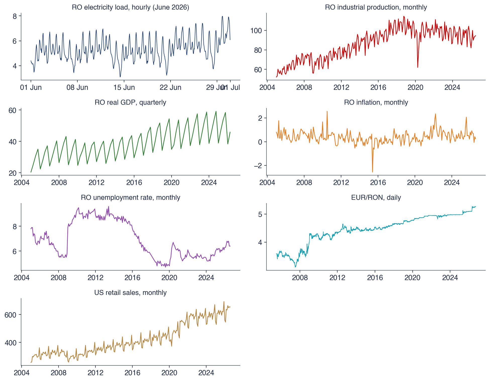
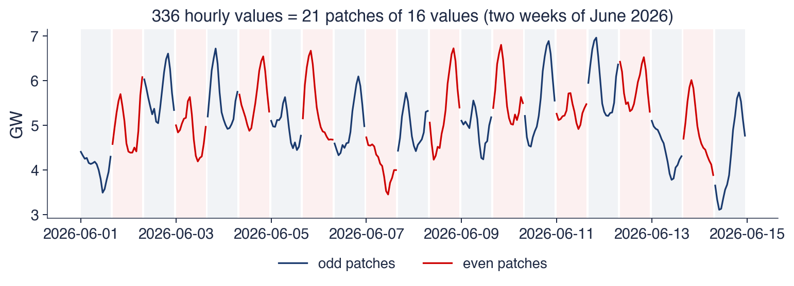
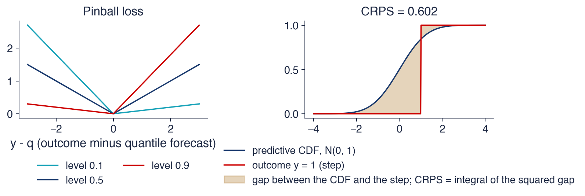
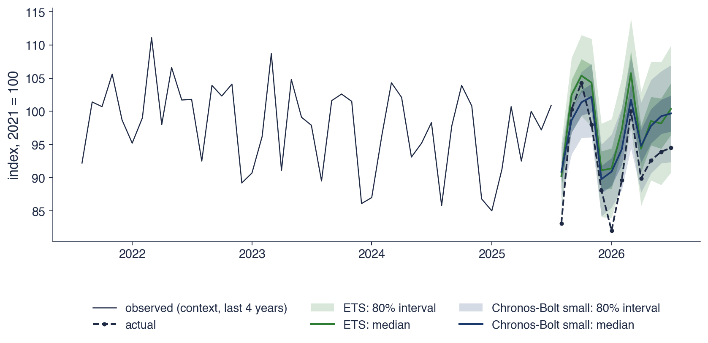
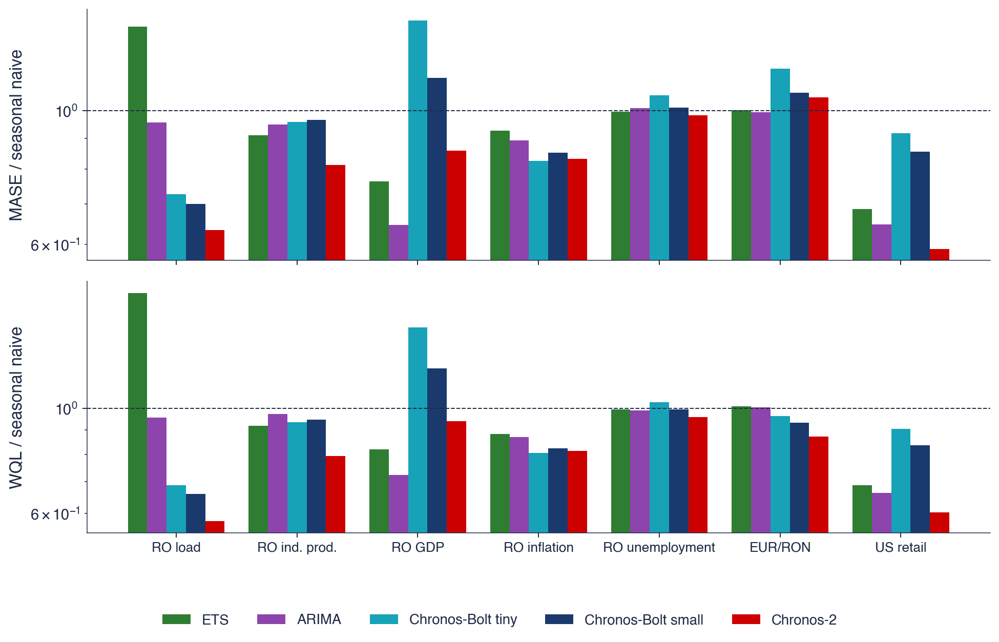
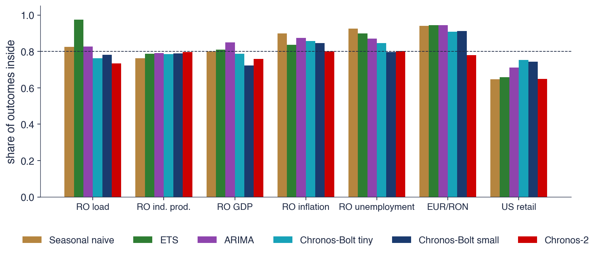
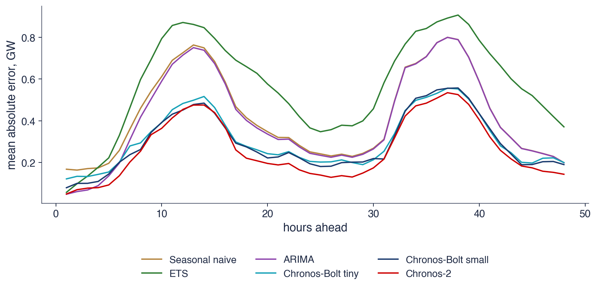
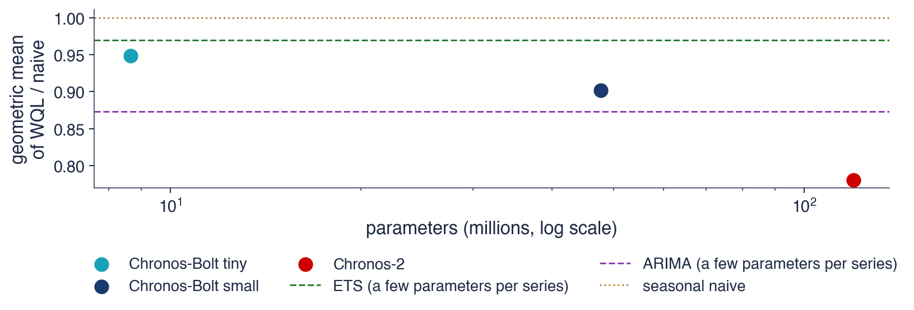
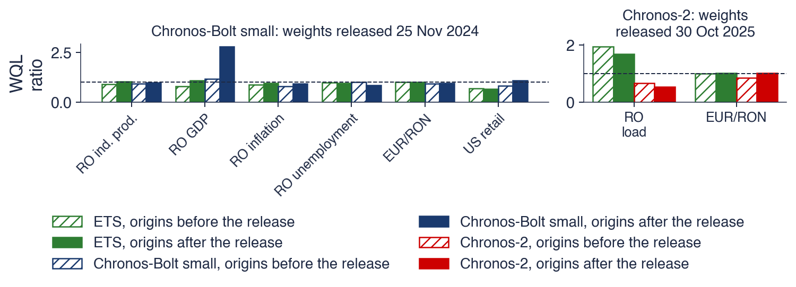

Bucharest University of Economic Studies IDA Institute Digital Assets Blockchain Research Center AI4EFin Artificial Intelligence for Energy Finance Romanian Academy, Institute for Economic Forecasting MSCA Digital Finance
The chapter asks a single question: can one large model, pretrained on many series, forecast a series it has not seen as well as a model built for that series? In Chapters 0–10, the implicit answer was that the question does not arise: every model, whether ETS, ARIMA, GARCH or VAR, is estimated on the series it forecasts. Chapter 9 introduced global models, trained on all the series of a data set, but still on the data of the problem.
The route has four stages. The first defines the foundation-model idea and presents, briefly, the network on which almost all these models rest, the Transformer. The second shows how a series of numbers becomes a sequence of inputs for this network and describes the main model families. The third defines the scores for probabilistic forecasts and applies the models to Romanian and US series in a rolling-origin test. The fourth discusses leakage and contamination, the reasons why a score can look better than it is, and the situations in which these models help.
In brief
Question: can one large model, pretrained on many series, forecast a series it has never seen as well as a model built for that series?
until now (Chapters 0–10): one model per series, estimated on that series (ETS, ARIMA, GARCH, VAR)
Chapter 9: global machine-learning models, trained on the series of one data set
Route of the chapter (self-study)
the idea of a foundation model; Transformers and attention in brief
from numbers to tokens: scaling, quantisation, patching; the main model families
probabilistic forecasts and their scores; an honest test on Romanian and US series
leakage and contamination; when these models help and when they do not
The first group of outcomes is conceptual. The reader should be able to define a foundation model, zero-shot forecasting and fine-tuning, and explain how a series becomes the input of a Transformer, through mean scaling, quantisation and patching. The second group concerns the actual models: Chronos, TimesFM, Moirai, Lag-Llama and TimeGPT differ in architecture, in the form of their input, in the form of their output and in their licence, and these differences have practical consequences.
The third group is empirical. A quantile forecast is evaluated with the pinball loss, the CRPS, the MASE of the median and the coverage of the 80% interval. An open model runs on a laptop processor, and its comparison with the seasonal naive forecast, ETS and ARIMA must use the same origins, the same context and the same scores. Finally, the reader should recognise the situations in which a good score may come from contamination rather than forecasting ability.
In brief
Define a foundation model, zero-shot forecasting and fine-tuning
Explain how a series becomes the input of a Transformer: mean scaling, quantisation, patching
Describe Chronos, TimesFM, Moirai, Lag-Llama and TimeGPT and say how they differ
Score a quantile forecast with the pinball loss, the CRPS, MASE and the coverage of an interval
Run an open model on a CPU, compare it fairly with seasonal naive, ETS and ARIMA and recognise contamination
The chapter uses the forecasting benchmarks of Chapter 0 and Chapter 4. The most important is the seasonal naive forecast, \(\hat y_{T+h} = y_{T+h-m}\): the forecast for period \(T+h\) is the value observed in the same season of the previous cycle. Here \(T\) is the last observed period, \(h\) the horizon and \(m\) the season length, for example 12 for monthly data or 168 for hourly data with a weekly cycle. For series without seasonality, \(m = 1\), and the seasonal naive forecast becomes the naive forecast, which repeats the last value.
The same chapters supply the ETS and ARIMA models, rolling-origin cross-validation and the error measures MAE, RMSE and MASE, and Chapter 9 supplies the split of the data into training, validation and test samples and the idea of a neural network as a flexible function with many parameters, estimated from data.
The last notion is the quantile. The quantile of level \(\tau\), written \(q_\tau\), is the value below which the variable lies with probability \(\tau\), where \(\tau \in (0, 1)\). The median is \(q_{0.5}\), and the quantiles \(q_{0.1}\) and \(q_{0.9}\) bound a central interval that contains the variable with probability 80%. Foundation models report their forecasts in exactly this form, as a set of quantiles.
In brief
Forecasting benchmarks and their evaluation (Chapters 0 and 4)
seasonal naive \(\hat y_{T+h} = y_{T+h-m}\): the forecast repeats the value of the same season one cycle earlier
\(T\): the last observed period; \(h\): the horizon; \(m\): the season length (12 for monthly data, 168 for hourly data with a weekly cycle); the hat marks a forecast
ETS; time-series cross-validation with a rolling origin; MAE, RMSE, MASE; the Diebold–Mariano test
ARIMA and seasonal ARIMA (Chapters 3 and 4); machine learning basics (Chapter 9)
training, validation and test samples; a neural network as a flexible function with many parameters
global models: one model trained on many series
Quantiles: \(q_\tau\) is the value below which the variable falls with probability \(\tau\)
\(\tau \in (0, 1)\): the level; \(q_{0.5}\) is the median, \(q_{0.1}\) and \(q_{0.9}\) bound a central 80% interval
AI is undergoing a paradigm shift with the rise of models (e.g., BERT, DALL-E, GPT-3) that are trained on broad data at scale and are adaptable to a wide range of downstream tasks. We call these models foundation models to underscore their critically central yet incomplete character.
Up to this chapter, every forecast in the course started from a model built for a single series. ETS, ARIMA, GARCH and VAR models are estimated on the data of the series, and their parameters describe that series and nothing else. The machine learning models of Chapter 9 took a first step further: one model, trained on all the series of a data set. Foundation models for time series take the idea to its end. A large model is trained once, by its developer, on a very broad corpus of series from many domains, and then forecasts series it has never seen, with no estimation on them at all.
The quotation above, from the report of Bommasani et al. (2021), gave this class of models its name in the field of language and images. The question of the chapter is whether the idea also works for time series: can a pretrained model forecast Romania's electricity load, its industrial production or the EUR/RON exchange rate as well as a model estimated on these very series? The answer needs three ingredients: an understanding of how a series of numbers becomes the input of a neural network, scores suited to probabilistic forecasts, and an honest test, on the same origins, against the classical benchmarks.
The answer obtained on the seven series of the chapter is nuanced. On hourly electricity load, the best foundation model reduces the weighted quantile loss by 42% relative to the seasonal naive forecast; on quarterly GDP, an ARIMA model remains better; on the EUR/RON rate and the unemployment rate, no model moves far from the naive forecast. The chapter shows why each of these results arises and what must be checked before believing a published score.

The seven series of the test: Romania's hourly electricity load (ENTSO-E, June 2026), Romania's industrial production, non-seasonally adjusted quarterly real GDP, monthly HICP inflation and unemployment rate (Eurostat), the NBR EUR/RON reference rate and US retail sales (FRED).
What you will be able to do
Define a foundation model, zero-shot forecasting and fine-tuning, and distinguish them from local and global models.
Explain how a series becomes the input of a Transformer: attention, mean scaling, quantisation and patching.
Describe the Chronos, TimesFM, Lag-Llama, Moirai and TimeGPT families and say how they differ.
Evaluate a quantile forecast with the pinball loss, the CRPS, the WQL, the MASE and the coverage of the 80% interval.
Compare a zero-shot model honestly with the seasonal naive forecast, ETS and ARIMA, and recognise leakage and contamination.
Chapter plan
The foundation-model ideaLocal, global and pretrained models; zero-shot and fine-tuning; pretraining at scale.
Transformers in briefThe encoder–decoder architecture, self-attention and a numerical example of attention weights.
From numbers to tokensMean scaling, the quantisation of Chronos and patching, on Romanian data.
The main model familiesChronos, Chronos-Bolt, Chronos-2, TimesFM, Lag-Llama, Moirai and TimeGPT.
SummaryKey ideas, formulas and self-assessment questions.
The foundation-model idea
This section defines three ways of forecasting many series, which differ in the data the model is trained on, and the basic vocabulary of the chapter: the context, zero-shot forecasting and fine-tuning. It then describes pretraining, the expensive stage that the model's developer carries out once.
A local model is estimated separately for each series, on its own data only. ETS and ARIMA are local models: they have few parameters, each with an interpretation, for example an autoregressive coefficient or a smoothing constant. The price is that 10,000 series mean 10,000 estimations, and a short series has too few observations to learn a complicated pattern.
A global model, as in Chapter 9, is a single model trained on all the series of a data set. The classic example is DeepAR of Salinas et al. (2020), a recurrent neural network trained on the sales history of all the products of a retailer. The series borrow information from one another: a new product benefits from the patterns learnt on old products. The model remains, however, tied to the data set it was trained on.
A foundation model goes one step further: it is pretrained once on a very broad corpus of series from many domains and is then used on new series and new data sets, without re-estimation. The term comes from Bommasani et al. (2021), who defined it for models trained on broad data at scale and adaptable to many tasks. The three classes therefore differ in their training data: the series itself, the data set of the problem, or a general corpus.
In brief
Local models
one model per series, estimated on that series only
ETS, ARIMA: few parameters, interpretable; 10 000 series mean 10 000 estimations
The context is the recent history \(y_{T-C+1}, \dots, y_T\) passed to the model at forecast time, where \(C\) is the context length. The context plays the role of the estimation data of a classical model, with one essential difference: the model does not change its parameters because of it, but reads it, as a language model reads a text and continues it.
A zero-shot forecast keeps the pretrained weights fixed and uses only the context of the new series. No parameter is estimated on the target series, so the forecast takes a fraction of a second. Fine-tuning is the alternative: the pretrained weights are trained further on the target data. It can help for unusual series that resemble little in the corpus, but it needs a validation sample, to know when to stop training, and much more computation. The tests in this chapter use zero-shot forecasts only.
The output of these models is usually not a single number but a set of quantiles \(\hat q_{0.1}, \dots, \hat q_{0.9}\) for each future step. Such a forecast is called probabilistic: it says not only where the series will probably be but also how uncertain that estimate is. For this reason the chapter needs scores that evaluate whole distributions, not only points.
In brief
Context
the recent history \(y_{T-C+1}, \dots, y_T\) passed to the model at forecast time (\(C\) = context length)
Zero-shot forecasting
the pretrained weights stay fixed
only the context of the new series is used
no parameter is estimated on the target series: forecasting takes a fraction of a second
Fine-tuning
further training of the pretrained weights on the target data
can help on unusual series; needs a validation sample and more computation
The output is usually a set of quantiles\(\hat q_{0.1}, \dots, \hat q_{0.9}\) for each future step, not a single number
Pretraining corpora mix public series from many domains: energy, transport, retail, weather, web traffic, finance and economics. The variety is deliberate. A model that has seen daily cycles in electricity load, weekly cycles in web traffic and annual cycles in sales can recognise a similar pattern in a new series. For Chronos, Ansari et al. (2024) also added synthetic series: random mixtures of real series and series generated from Gaussian processes, which cover shapes that public data do not contain often enough.
The scale is far above that of any data set in the previous chapters. TimesFM, for example, was pretrained on about \(10^{11}\) data points (Das et al., 2024). Pretraining is done once, by the developer, on many graphics processing units (GPUs), and the photograph of a Google data centre is a reminder of the infrastructure it requires.
The user does not repeat this cost. They only run the model, and the small versions run on the central processing unit (CPU) of an ordinary computer. This division of cost is central to the practical value of the models: an analyst with a laptop can obtain in a fraction of a second a probabilistic forecast that would otherwise have required estimating a separate model.
Local, global and foundation models differ in the data they are trained on: the series itself, the series of one data set, or a broad corpus from many domains. A zero-shot forecast uses fixed weights and only the context of the new series, and its result is a set of quantiles, that is, a probabilistic forecast.
In brief
Local, global and foundation models differ in what the model is trained on
Zero-shot: fixed weights, only the context of the new series
The output is a set of quantiles: a probabilistic forecast
Section summary
A foundation model moves estimation from forecast time to pretraining time. The developer pays the cost once, on a very broad corpus, and the user obtains a probabilistic forecast from a context, with no estimation. What remains to be seen is which network makes this possible and how a series of numbers is turned into an input for it.
Transformers in brief
Almost all foundation models for time series are built on the Transformer, the network introduced by Vaswani et al. (2017) for machine translation. This section presents the architecture, its central mechanism, self-attention, and a numerical example, without going into the details of training neural networks.
Vaswani et al. (2017) proposed a network for sequences built entirely on attention, without recurrence. The recurrent networks of Chapter 9 read the sequence step by step and carry their memory in an internal state; the Transformer compares each position directly with all the others. The network was designed for translation and today underlies most large language models (LLMs).
The input is a sequence of tokens, that is, discrete units: in a text, words or pieces of words. Each token is turned into a vector of numbers, called an embedding, which the network learns in training. The original diagram, reproduced on the slide, has two parts. The encoder (left) reads the whole input and turns it into an internal representation. The decoder (right) produces the output step by step, using this representation and what it has already produced. Decoder-only models, such as GPT, TimesFM and Lag-Llama, drop the encoder and forecast the next token from all the previous ones, which fits naturally with forecasting a series.
One technical detail has consequences: attention, as defined below, ignores the order of its inputs. If the positions are permuted, the output is permuted in the same way. For a time series, however, order is essential, so information about its position in the sequence is added to each vector (positional encoding).
Self-attention produces, for each position of the sequence, a weighted average of the information at all positions. Each input vector \(x_i\) produces three vectors through three linear maps: a query \(q_i = W_Q x_i\), which describes what position \(i\) looks for; a key \(k_i = W_K x_i\), which describes what position \(i\) offers; and a value \(v_i = W_V x_i\), which is the information passed on by position \(i\). The matrices \(W_Q\),\(W_K\) and \(W_V\) are the same for every position and are learnt in training.
where the indices \(j\) and \(l\) run over all input positions and \(w_{ij}\) is the weight that position \(i\) gives to position \(j\). The dot product \(q_i^\top k_j\) is a similarity score: it is large when the query and the key point in roughly the same direction. \(d\) is the length of the key vectors; without the division by \(\sqrt{d}\), the dot products would grow with the dimension of the vectors, and the weights would concentrate almost entirely on a single position.
The function that turns scores into weights is the softmax. The exponential makes every weight positive, and the denominator makes the weights of position \(i\) sum to 1. The output is therefore a weighted average of the values, with larger weights for the positions whose keys match the query. An AR(\(p\)) model also takes a weighted average of the past, but with the same weights at every time; in attention, the weights depend on the content of the sequence.
In brief
Each input vector \(x_i\) produces three vectors, by three linear maps learnt in training
a query \(q_i = W_Q x_i\) (what position \(i\) looks for), a key \(k_i = W_K x_i\) (what position \(i\) offers), a value \(v_i = W_V x_i\) (what position \(i\) passes on)
\(W_Q\), \(W_K\), \(W_V\): weight matrices learnt in training, the same for every position
The output at position \(i\) is a weighted average of the values of all positions
The computation in (11.1) is written compactly in matrix form: \(\text{softmax}(QK^\top/\sqrt{d})\,V\). The rows of the matrices \(Q\),\(K\) and \(V\) are the vectors \(q_i\),\(k_i\) and \(v_i\), and the product \(QK^\top\) contains all the scores \(q_i^\top k_j\) at once. The softmax is applied to each row and gives the weights \(w_{ij}\), and multiplication by \(V\) forms the weighted averages. The matrix form is the one in which the computation runs efficiently on graphics processors.
For a time series, the intuition is the following. Today's step can "look at" the same hour last week and give it a large weight, if its query matches the key of that hour. Unlike the lags of an AR(\(p\)), fixed in advance by the analyst, these links are learnt from data and can differ for each position and for each series.
The price is cost. Each of the \(n\) inputs is compared with all the others, so attention needs \(n^2\) comparisons. A context of 2048 values gives \(2048^2\), about 4 million comparisons in every attention layer. This quadratic growth is the reason why modern models group values into patches, as the next section shows.
In brief
Matrix form of the same computation: \(\text{softmax}(QK^\top/\sqrt{d})\,V\)
\(Q\), \(K\), \(V\): matrices whose rows are the vectors \(q_i\), \(k_i\), \(v_i\); \(QK^\top\) holds all the scores \(q_i^\top k_j\)
softmax: applied row by row, it turns the scores into the weights \(w_{ij}\) of the previous slide
Intuition for series: today's step can look back at the same hour last week and give it a large weight
the weights are learnt from data, not fixed in advance as the lags of an AR(\(p\))
Cost: \(n\) inputs need \(n^2\) comparisons
a context of 2048 values gives about 4 million comparisons in each attention layer
The example follows (11.1) for one query and three keys. The scaled scores \(q^\top k_j/\sqrt{d}\) are 2, 1 and 0, and the values attached to the keys are \(v_1 = 10\),\(v_2 = 20\) and \(v_3 = 30\). The first step applies the exponential: \(e^2 = 7.39\),\(e^1 = 2.72\) and \(e^0 = 1\), with sum 11.11.
The second step divides each term by the sum and gives the weights 0.67, 0.24 and 0.09, which sum to 1. The third step takes the weighted average of the values: \(0.665 \times 10 + 0.245 \times 20\)\(+\, 0.090 \times 30 = 14.2\). The first key, with the largest score, receives two thirds of the weight, and the output is close to its value, 10. The other two values still contribute and pull the output up. Attention is therefore a "soft" selection: it favours the matching positions without ignoring the others.
A foundation model stacks many such layers. Each layer has several attention heads, each with its own matrices \(W_Q\),\(W_K\) and \(W_V\), so that one head can follow the daily cycle and another the recent level.
In brief
One query and three keys; scores \(q^\top k_j/\sqrt{d}\) = 2, 1, 0; values \(v_j\) = 10, 20, 30
Step 1: exponentiate: \(e^2\), \(e^1\), \(e^0\)
Step 2: divide by the sum: weights 0.67, 0.24, 0.09 (they sum to 1)
Step 3: output \(= \sum_j w_j v_j\) = 14.2
the highest score gets most of the weight, but every value contributes
A foundation model stacks many such layers, each with several attention heads
Attention makes each step a learnt weighted average of all steps, with weights given by the match between queries and keys. Chronos uses an encoder–decoder architecture, while TimesFM and Lag-Llama are decoder-only. The cost of attention grows with the square of the number of inputs.
In brief
Attention: each step is a learnt weighted average of all steps
Encoder–decoder (Chronos) and decoder-only (TimesFM, Lag-Llama) designs
The cost grows with the square of the number of inputs
Section summary
The Transformer replaces the fixed lags of an AR model with weights that depend on the content of the sequence. The numerical example shows that the result is a weighted average dominated by the best-matching positions. The network was, however, built for discrete tokens, and its cost grows with the square of the input length, two problems that a long time series of real numbers makes immediately visible.
From numbers to tokens
A language model reads tokens from a fixed vocabulary, while a time series contains real numbers in very different units. This section presents the three solutions used in practice and applies them to two Romanian series: the mean scaling and quantisation of Chronos, on industrial production, and patching, on hourly electricity load.
The problem: a language model reads words, a series has numbers
Series differ in units and levels. Romania's electricity load is measured in gigawatts (GW), with hourly values between about 3 and 8; an industrial production index moves around 100; the EUR/RON rate is around 5. A single model used for all these series needs a common scale. Otherwise the same shape, for example a 10% rise, would look completely different in each series.
Practice has produced three solutions. The first, from Chronos, combines scaling with quantisation: each value becomes a token from a fixed vocabulary, exactly like a word. The second, patching, groups consecutive values into one input vector; TimesFM, Moirai and Chronos-Bolt use it. The third writes the digits as text and gives them to a general language model, which reads them as character strings; Gruver et al. (2023) showed that an LLM can produce zero-shot forecasts in this way.
In all three cases the model works on a unit-free representation, and the forecasts are transformed back to the original units at the end. For the user the transformation is invisible; for understanding the results it matters, because it explains what the model can and cannot "see".
In brief
Series differ in units and levels: load in GW, an index around 100, an exchange rate around 5
one model for all of them needs a common scale
Three solutions used in practice
scaling + quantisation: each value becomes one token from a fixed vocabulary (Chronos)
patching: groups of consecutive values become one input vector (TimesFM, Moirai, Chronos-Bolt)
digits as text: a general LLM reads the numbers as strings (Gruver et al. (2023))
In all cases the forecasts are transformed back to the original units
The first step of Chronos is mean scaling. Each value of the context is divided by the mean of the absolute values of the context:
\[\tilde x_t = \frac{x_t}{s}, \qquad s = \frac{1}{C}\sum_{t=1}^{C} |x_t|,\]
(11.2)
where \(x_t\) is the \(t\)-th value of the context, \(t = 1, \dots, C\),\(C\) is the context length, \(s\) is the scale and \(\tilde x_t\) the scaled value. After scaling, the context has values of order one, whatever the original units: a series in GW and one in lei look the same if they have the same shape. Unlike ordinary standardisation, mean scaling does not subtract the mean, so it keeps the sign of the values and the ratios between them.
The second step is quantisation: each scaled value is replaced by the number of a bin. Chronos divides the interval \([-15, 15]\) into 4093 equal bins of width about 0.0073, and the token of \(\tilde x_t\) is the number of the nearest bin centre. The vocabulary also contains a few special tokens, for example for padding a sequence that is too short and for the end of the sequence. After these two steps, a series is a sequence of integers, exactly like a tokenised text.
In brief
Mean scaling
each value of the context is divided by the mean absolute value of the context
On the token sequence, Chronos trains an ordinary language model, T5, to forecast the next token. The loss function is the cross-entropy \(-\log \hat p(z_{t+1})\), where \(z_{t+1}\) is the actual next token and \(\hat p(z_{t+1})\) the probability the model gives it. The loss is 0 when the model gives probability 1 to the correct token and grows as that probability falls. The model thus learns a probability distribution over the 4093 bins, not a single number.
The forecast is made in three steps. First, many future token paths are sampled from the model, each token drawn from the forecast distribution given everything before it. Then each token is replaced by the centre of its bin and multiplied by the scale \(s\), which brings the values back to the original units. Finally, at each future step, the quantiles of the sampled values are read off: the median, the 10% quantile, the 90% quantile and so on.
The construction has a clear limit: a scaled value outside the interval \([-15, 15]\) cannot be produced. A series that rose to 20 times the mean level of its context would exceed the model's vocabulary. For ordinary economic series the limit is rarely reached, but it shows that the model forecasts shapes relative to the context, not absolute levels.
In brief
Training: a language model (T5) learns to predict the next token
loss: the cross-entropy \(-\log \hat p(z_{t+1})\), where \(z_{t+1}\) is the true next token and \(\hat p(z_{t+1})\) the probability the model gave it
it is 0 when that probability is 1 and grows as the probability falls
Forecast in three steps
sample many token paths from the model
map each token back to its bin centre and multiply by \(s\)
read the quantiles of the sampled values at each future step
Limit: scaled values outside \([-15, 15]\) cannot be produced
The context is Romania's unemployment rate, in percent, seasonally adjusted (Eurostat), for the six months from March to August 2026: 6.5, 6.8, 6.7, 6.8, 6.4, 6.4. The first step computes the scale of (11.2): all values are positive, so \(s\) is their mean, \(39.6/6 = 6.60\).
The second step divides each value by 6.60 and gives 0.985, 1.030, 1.015, 1.030, 0.970, 0.970. The third step finds the nearest bin centre. The centres are numbered from 0 to 4092 and are 0.0073 apart, starting at \(-15\); the value 1 therefore corresponds roughly to centre 2182, and the six values give the tokens 2180, 2187, 2184, 2187, 2178 and 2178.
Two observations follow from the example. Equal values give equal tokens, and a change of 0.1 percentage points in the unemployment rate, that is 1.5% of the scale, moves the token by two to three bins: the grid is fine enough for the typical moves of the series. More importantly, the model never sees the 6.6% level; it sees only the shape of the series relative to its scale. For the model, an unemployment rate of 6.6% and one of 13.2% with the same relative shape are identical.
In brief
Context: the Romanian unemployment rate (%, seasonally adjusted, Eurostat), March 2026 to August 2026
The chart applies the two steps to Romania's industrial production, an index with base 2021 = 100, for the last 96 months of the series, from August 2018 to July 2026. The left panel shows the series in its own units, and the dashed red line marks the scale \(s\), the mean absolute value of the context, 97.8. One can see the monthly seasonality, with regular drops, and the sudden fall of April 2020, when the lockdown stopped a large part of industry.
The right panel shows the scaled context, \(x_t/s\) (blue line), and its tokens (red step line), on a coarse grid of only 21 bins, chosen so that the steps are visible. The centres of the bins in use are marked by dotted horizontal lines at 0.6, 0.9 and 1.2. Each scaled value is replaced by the nearest centre, which is why the red line jumps between the three levels.
After scaling, all 96 values lie between 0.63 and 1.17. They therefore occupy only a few percent of the interval \([-15, 15]\) covered by the Chronos vocabulary; the rest of the interval is reserved for series with large jumps relative to their usual level. On the coarse grid of 21 bins, the 96 months use only three tokens, and the April 2020 fall is the only month that receives a separate token.
The coarse grid loses almost all the seasonal shape: ordinary months are either "0.9" or "1.2". With the 4093 bins of Chronos, the distance between centres is about 40 times smaller than that between 0.9 and 1.2, and the grid is fine enough to keep the seasonal shape. In practice, the information lost through quantisation is much smaller than the forecast error.
The example also shows a weakness of mean scaling. The scale is the mean of all the values of the context, so an extreme value changes it. A very large spike raises \(s\) and shrinks all the other scaled values; a fall like the one in 2020 lowers it slightly. Outliers in the context therefore matter for the whole forecast, not only for the period in which they occur.
In brief
Romanian industrial production (Eurostat, 2021 = 100), the last 96 months; scale \(s\) = 97.8
Right: the scaled context and its tokens on a coarse grid of 21 bins (Chronos uses 4093)
After scaling, all values lie between 0.63 and 1.17: a few per cent of the range \([-15, 15]\)
On the coarse grid the 96 months use only 3 tokens: the April 2020 fall (the lockdown) is one separate token
With 4093 bins the grid is fine enough to keep the seasonal shape
One extreme value inflates \(s\) and shrinks all the other scaled values: outliers in the context matter
A patch is a block of \(P\) consecutive values, turned by a small network into a single input vector for the Transformer. The idea was popularised by PatchTST of Nie et al. (2023), whose title, "a time series is worth 64 words", sums up the analogy: a patch plays the role of a word, and the series becomes a short sentence.
Patching has two advantages. The first is length: 2048 values with \(P = 16\) give 128 patches, so attention needs \(128^2 = 16{,}384\) comparisons instead of \(2048^2\), that is, 256 times fewer. The second is content: each input carries a local shape, for example a slope or a peak, rather than a single noisy number. One hourly value on its own says little; 16 consecutive values show whether the series is climbing towards the evening peak or falling towards the night minimum.
TimesFM uses input patches of 32 values, Moirai chooses the patch size according to the frequency of the series, and Chronos-Bolt and Chronos-2 use patches of 16. The output can also be a whole patch: the model forecasts a block of future values at once, which is much faster than generating them one at a time, token by token, as in Chronos.
In brief
Patch
a block of \(P\) consecutive values, mapped to one input vector by a small network
The chart shows 336 hourly values of Romania's electricity load, in GW, for the first two weeks of June 2026, with data from ENTSO-E, the European network of transmission system operators. The 336 hours are split into \(336/16 = 21\) patches of 16 values each; the patches alternate in colour, blue and red, on grey and pink backgrounds, so that their boundaries are visible.
The series has a clear daily pattern: a night minimum around 4 GW and an evening peak between 6 and 7 GW. Two of the minima, around 7 and 14 June, are deeper and longer: they are the Sundays, when industrial demand falls. Each patch contains a piece of this pattern: some cover only the morning rise, others the evening peak and decline.
In brief

336 hourly values (two weeks of June 2026, ENTSO-E) cut into 21 patches of 16 values
A day has 24 hours, so a patch of 16 hours covers two thirds of a day, and the patches do not align with the daily cycle. The same patch starts once at midnight, another time at 16:00 and another at 08:00. The model therefore does not receive "the day" as a unit but fragments of days, shifted from one day to the next.
Attention solves this problem. It links the patches by content, not by fixed position: Monday's morning rise can be connected with last Monday's, even if the two rises fall in different positions of their patches. This is the same intuition as in the example of the same hour last week, applied to blocks.
Attention can only link what is in the context. A weekly cycle has 168 hours, that is \(168/16 = 10.5\), so 11 patches. The model can "see" the difference between weekdays and the weekend only if the context covers at least one full week; the section on evaluation confirms this rule empirically.
In brief
A day has 24 hours, so a patch of 16 covers two thirds of a day: patches do not align with the daily cycle
Attention links patches: the morning rise of Monday can be matched with that of the previous Monday
A weekly cycle (168 hours) is visible only if the context covers at least one week: 11 patches
Mean scaling removes the units, and quantisation turns the scaled values into tokens from a fixed vocabulary, as in Chronos. Patching groups consecutive values, which shortens the sequence and gives each input a local shape. The forecast is transformed back to the original units at the end.
In brief
Mean scaling removes units; quantisation turns values into tokens (Chronos)
Patching groups values: shorter sequences, local shapes
The forecast is transformed back to the original units
Section summary
A series becomes the input of a Transformer through a unit-free representation: tokens of scaled values or patches of consecutive values. The representation explains two properties that the evaluation will confirm: the model forecasts the shape relative to the scale, not the level, and it can use only the cycles that the context contains in full.
The main model families
Between 2023 and 2025 several families of foundation models for time series appeared, built by large technology companies and academic groups. This section describes the most cited ones through four characteristics that matter in practice: architecture, form of the input, form of the output and licence.
Chronos, published by Ansari et al. (2024) at Amazon, is the model described in the previous section: a T5 encoder–decoder trained on scaled and quantised values, which samples token paths. Its advantage is conceptual simplicity, since it reuses a language model without changes; its drawback is speed, since every path is generated token by token.
Chronos-Bolt, released in November 2024, replaces the tokens with patches of 16 values and outputs the quantiles of level 0.1, 0.2, …, 0.9 directly, without sampling. The chapter uses two sizes: tiny, with 9 million parameters, and small, with 48 million; both accept a context of up to 2048 values. Chronos-2, described by Ansari et al. (2025) and released in October 2025, has 119 million parameters, outputs 21 quantile levels and can use covariates, that is, explanatory variables, as well as groups of related series.
All three have open weights under the Apache-2.0 licence, which also allows commercial use, and are installed with the Python package chronos-forecasting. All run on a CPU, which makes them suitable for a course: every result in this chapter can be reproduced on a laptop.
TimesFM, published by Das et al. (2024) at Google, is a decoder-only Transformer. The input consists of patches of 32 values and the output of patches of 128 values: the model forecasts a long block at once, which reduces the number of steps needed for a long horizon. It was pretrained on real series, for example Google Trends and Wikipedia page views, and on synthetic series, and it has about 200 million parameters. The weights are open (Apache-2.0); later versions add quantile outputs.
Lag-Llama, by Rasul et al. (2023), is also a decoder-only model, built on the Llama architecture of language models. Its input is different: instead of patches, each step receives the values of the series at lags chosen by frequency, for example 7 days for daily data, 12 months for monthly data or 24 hours for hourly data, plus calendar variables. The construction resembles a seasonal autoregressive model in which the seasonal lags are given explicitly.
The output of Lag-Llama is parametric: the model forecasts the parameters of a Student-\(t\) distribution for the next step, and repeated sampling gives paths and, from them, quantiles. The model is small and open (Apache-2.0) and was designed mainly as a starting point for fine-tuning.
Moirai, by Woo et al. (2024) at Salesforce, aims to be a "universal" forecasting model. It can take any number of variables in a single sequence, so it treats a univariate and a multivariate series in the same way, and it chooses the patch size according to the frequency of the data. The output is a mixture distribution, which can represent varied shapes, for example skewed or heavy-tailed distributions. It was pretrained on the LOTSA corpus, with about 27 billion observations. The weights are open but under a non-commercial licence (CC BY-NC 4.0).
TimeGPT, by Garza et al. (2023), is a closed model, available only through a paid application programming interface (API). The weights and training data cannot be inspected, the model version can change without notice, and the user's data leave their computer for the provider's servers.
For a course, these three features are decisive. A result obtained today through an API may not be reproducible a year from now, and the question whether the test series was in the training data has no answer. For these reasons TimeGPT is not used in the tests of this chapter.
The table summarises the four characteristics. In the architecture column, the models split into encoder–decoder (Chronos, Chronos-Bolt), encoder-only (Chronos-2, Moirai) and decoder-only (TimesFM, Lag-Llama). In the input column, Chronos is the only one that uses value tokens; the rest use patches, except Lag-Llama, which uses values at fixed lags. In the output column the forms are more varied: sampled paths, a fixed number of quantiles, patches of values, a mixture of distributions or a Student-\(t\) distribution. For TimeGPT, the paper describes the architecture only in broad terms, and the output consists of point forecasts and intervals.
The last column, access, decides what can be checked. Weights under the Apache-2.0 licence can be downloaded, run and inspected by anyone; Moirai's CC BY-NC 4.0 licence forbids commercial use; TimeGPT can be used only through the paid API.
Another direction uses general LLMs that read the digits of the series as text (Gruver et al., 2023).Tan et al. (2024) tested such methods systematically and showed that when the language-model part is removed or replaced by a simple attention layer, accuracy does not fall: the LLM component adds computational cost, but not accuracy.
In brief
Model
Architecture
Input
Output
Access
Chronos (2024)
encoder–decoder (T5)
tokens (bins)
sampled paths
Apache-2.0
Chronos-Bolt (2024)
encoder–decoder
patches of 16
9 quantiles
Apache-2.0
Chronos-2 (2025)
encoder
patches + covariates
21 quantiles
Apache-2.0
TimesFM (2024)
decoder
patches of 32
patches of 128
Apache-2.0
Moirai (2024)
encoder
patches, any variables
mixture
CC BY-NC 4.0
Lag-Llama (2023)
decoder (Llama)
lagged values
Student-\(t\)
Apache-2.0
TimeGPT (2023)
encoder–decoder (few details)
–
points, intervals
paid API
A further line of work feeds the digits to general LLMs (Gruver et al. (2023)); Tan et al. (2024) show that the language-model part adds cost but no accuracy
Chronos works with tokens, while Chronos-Bolt and Chronos-2 work with patches and output quantiles directly. TimesFM and Lag-Llama are decoder-only models, and Moirai accepts any number of variables. Open weights make results reproducible; a paid API does not.
In brief
Chronos: tokens; Chronos-Bolt and Chronos-2: patches and direct quantiles
TimesFM and Lag-Llama: decoder-only; Moirai: any number of variables
Open weights make results reproducible; a paid API does not
Section summary
The model families differ less in idea than in detail: how values are scaled and grouped, what form the forecast takes and who has access to the weights. Two things matter for the tests of the chapter: all the models used have open weights and run on a CPU, and all produce quantiles, which calls for scores suited to probabilistic forecasts.
Probabilistic forecasts and their scores
A point forecast is evaluated by the distance between the forecast and the observed value. A probabilistic forecast is a distribution, while the observed value is a single number, so scores are needed that compare these two objects. This section defines the pinball loss for one quantile, the CRPS for a whole distribution, the WQL as a practical version of the CRPS, the MASE for the median and coverage for the calibration of intervals.
A probabilistic forecast gives the distribution of \(y_{T+h}\), conditional on the data available up to time \(T\). Foundation models report this distribution through quantiles \(\hat q_\tau\) at the levels \(\tau = 0.1, 0.2, \dots, 0.9\). From them one reads directly the point forecast, the median \(\hat q_{0.5}\), and the central 80% interval, \([\hat q_{0.1}, \hat q_{0.9}]\). A fan chart draws several such bands, for example the 50% and 80% bands, one over the other.
A good probabilistic forecast has two qualities, following Gneiting and Raftery (2007). Calibration requires the stated probabilities to match the observed frequencies: an 80% interval should contain about 80% of the observed values. Sharpness requires the distribution to be concentrated: of two equally well calibrated forecasts, the narrower is more informative. The principle of Gneiting and Raftery (2007) is to maximise sharpness subject to calibration.
The classical benchmarks do not produce quantiles directly, but we obtain them from the Normal distribution. For ETS and ARIMA, \(\hat q_\tau = \hat y_{T+h} + z_\tau \hat\sigma_h\), where \(\hat y_{T+h}\) is the point forecast, \(z_\tau\) the quantile of level \(\tau\) of the standard Normal distribution (for example \(z_{0.9} = 1.28\)), and \(\hat\sigma_h\) the estimated standard deviation of the forecast error at horizon \(h\). The comparison between foundation models and benchmarks is thus made on the same kind of output.
In brief
A probabilistic forecast gives the distribution of \(y_{T+h}\) given the data up to \(T\)
foundation models report it through quantiles \(\hat q_\tau\) at levels \(\tau = 0.1, \dots, 0.9\)
Point forecast: the median \(\hat q_{0.5}\)
Central 80% interval: \([\hat q_{0.1}, \hat q_{0.9}]\); a fan chart draws several such bands
Two qualities to check
calibration: the 80% interval contains about 80% of the outcomes
For ETS and ARIMA we use Normal quantiles \(\hat q_\tau = \hat y_{T+h} + z_\tau \hat\sigma_h\)
\(z_\tau\): the \(\tau\) quantile of the standard Normal distribution (\(z_{0.9} = 1.28\)); \(\hat\sigma_h\): the estimated standard deviation of the \(h\)-step forecast error
The loss is 0 when the quantile coincides with the observed value and grows linearly with the distance between them. The asymmetry is essential, however: an observed value above the quantile receives weight \(\tau\), and one below the quantile receives weight \(1 - \tau\). For \(\tau = 0.9\), missing on the upside costs 0.9 per unit of distance, and missing on the downside only 0.1.
The property that justifies this function is that its expected value is minimised exactly at the true quantile of level \(\tau\). A forecaster who knows the true distribution has no reason to report anything other than its quantile: any shift up or down raises the mean loss. A score with this property is called strictly proper, and it prevents "gaming" through deliberately wide or narrow intervals.
In brief
The pinball (quantile) loss scores one forecast quantile \(\hat q_\tau\) against the outcome \(y\)
The continuous ranked probability score (CRPS), introduced by Matheson and Winkler (1976), evaluates a whole forecast distribution against the observed value \(y\):
Here \(F\) is the forecast distribution function and \(z\) the integration variable, which runs over all possible values. The indicator \(\mathbf{1}\{z \ge y\}\) is 1 if \(z \ge y\) and 0 otherwise; it is the distribution function of a forecast that puts all its mass on the observed value \(y\). The first form therefore measures the squared distance between the forecast distribution function and the step at \(y\). The second form, in which \(F^{-1}(\tau)\) is the quantile of level \(\tau\) of \(F\), shows that the CRPS is twice the average pinball loss over all levels.
The CRPS is greater than or equal to 0 and is expressed in the units of \(y\). It is 0 only for a forecast that puts all its mass exactly on the observed value, and a smaller value means a better forecast. For a point forecast, \(F\) is itself a step at \(\hat y\), and the CRPS becomes \(|y - \hat y|\): the CRPS generalises the absolute error and can be compared directly with the MAE of a point forecast.
In brief
The CRPS (continuous ranked probability score, Matheson and Winkler (1976)) scores a whole forecast distribution against the outcome \(y\)
The integral in (11.4) requires the whole distribution, but foundation models report only a few quantiles. The weighted quantile loss (WQL) approximates the CRPS with the 9 levels 0.1, …, 0.9 and divides the result by the size of the series:
The index \(\tau\) runs over the 9 levels, and \(t\) runs over all forecast steps from all origins of the test. \(\hat q_{\tau,t}\) is the quantile of level \(\tau\) forecast for step \(t\), and \(y_t\) the value observed at that step. The numerator is, for each level, twice the sum of the pinball losses, as in the second form of the CRPS.
The denominator \(\sum_t |y_t|\) removes the units: the WQL is a loss relative to the level of the series, so series with very different levels can be compared, for example load in GW and the exchange rate in lei. The WQL is 0 for a perfect forecast, and a smaller value means a better forecast. It is the score reported by Chronos and by the GIFT-Eval benchmark, which is why it is also the main score of the test in this chapter.
In brief
WQL (weighted quantile loss)
the CRPS approximated with the 9 levels 0.1, …, 0.9 and divided by the size of the series
The left panel plots the pinball loss (11.3) against the difference \(y - \hat q\) between the observed value and the forecast quantile, for three levels. The dark blue line, for \(\tau = 0.5\), is symmetric: it has slope 0.5 on both sides. The red line, for \(\tau = 0.9\), rises steeply to the right, with slope 0.9, and very slowly to the left, with slope 0.1; the turquoise line, for \(\tau = 0.1\), is its mirror image. The three lines meet at 0, where the quantile is exact.
The right panel illustrates the first form of (11.4). The forecast is the Normal distribution with mean 0 and variance 1, written N(0, 1), and its distribution function is the blue curve. The observed value is \(y = 1\), and the red step is the distribution function of a perfect forecast. The shaded area is the gap between the two curves; the CRPS is the integral of the square of this gap and equals 0.602 here. The notation N(\(\mu\),\(\sigma^2\)) denotes in general the Normal distribution with mean \(\mu\) and variance \(\sigma^2\).
In brief

Left: \(L_\tau\) against \(y - \hat q\) for \(\tau\) = 0.1, 0.5, 0.9. Right: the forecast N(0, 1), the outcome \(y = 1\)
N(\(\mu\), \(\sigma^2\)): the Normal distribution with mean \(\mu\) and variance \(\sigma^2\)
The asymmetry of the pinball loss explains why the score demands the correct quantile. At \(\tau = 0.9\), an observed value above the quantile costs, per unit of distance, 9 times more than one below it (\(0.9/0.1 = 9\)). A forecaster minimises the mean loss only if exceedances occur in 10% of cases, exactly the definition of the 0.9 quantile. At \(\tau = 0.5\), the two weights are equal and the loss is half the absolute error: the median is evaluated as a point forecast.
Three values of the CRPS show what the score rewards. For the N(0, 1) forecast, the CRPS is 0.234 if the observed value is \(y = 0\), the centre of the distribution, and 0.602 if \(y = 1\), one standard deviation away. The N(0, 4) forecast, with standard deviation 2, gives a CRPS of 0.663 at \(y = 1\), larger than 0.602, even though its band covers the observed value more comfortably.
The comparison of the last two numbers shows that a wider band is penalised even when it covers the observed value. The CRPS therefore rewards calibration and sharpness at the same time: a good score cannot be obtained either with very wide intervals, which cover everything, or with very narrow ones, which often miss.
In brief
At \(\tau = 0.9\) an outcome above the quantile costs 9 times more than one below: the 0.9 quantile should be exceeded only 10% of the time
At \(\tau = 0.5\) the loss is half the absolute error: the median is scored like a point forecast
CRPS of N(0, 1): 0.234 if \(y = 0\), 0.602 if \(y = 1\); N(0, 4) at \(y = 1\) gives 0.663: a wider band is penalised even when it covers the outcome
The CRPS rewards calibration and sharpness at the same time
Consider a forecast of next month's unemployment rate with three quantiles: \(\hat q_{0.1} = 6.5\),\(\hat q_{0.5} = 7.0\) and \(\hat q_{0.9} = 7.6\), in percent. The value observed later is \(y = 7.2\). Each loss is computed with (11.3), according to the position of \(y\) relative to the quantile.
At \(\tau = 0.1\), the observed value is above the quantile, so the loss is \(0.1 \times (7.2 - 6.5) = 0.07\). At \(\tau = 0.5\), the observed value is also above, and the loss is \(0.5 \times (7.2 - 7.0) = 0.10\). At \(\tau = 0.9\), the observed value is below, so the weight \(1 - \tau\) applies: \((1 - 0.9) \times (7.6 - 7.2) = 0.04\). The largest loss falls on the median, which is the furthest from the observed value relative to its weight.
The CRPS approximated with these three levels is twice the mean loss, \(\frac{2}{3}(0.07 + 0.10 + 0.04) = 0.140\) percentage points. The observed value, 7.2, lies in the 80% interval [6.5, 7.6], so in the coverage score defined two slides later this forecast counts as covered.
The mean absolute scaled error (MASE), proposed by Hyndman and Koehler (2006), evaluates the point forecast, here the median. It divides the mean absolute error (MAE) of the forecast by the in-sample MAE of the seasonal naive forecast:
The numerator is the mean absolute error of the forecasts \(\hat y_{T+j}\) over the \(h\) steps after the origin \(T\). The denominator is the mean absolute error of the seasonal naive forecast \(y_{t-m}\) inside the sample, for \(t = m+1, \dots, T\), where \(m\) is the season length. The denominator therefore measures how hard the series is to forecast with the simplest method, computed on the data available at the origin.
The MASE has no units. A value below 1 means the forecast is better than the in-sample seasonal naive forecast, and a value above 1 that it is worse. For example, a forecast with MAE 0.30 for a series on which the seasonal naive forecast has an in-sample MAE of 0.25 has \(\text{MASE} = 0.30/0.25 = 1.2\). Because the denominator is computed in sample, with a lag of one season, and the numerator out of sample, over \(h\) steps, even the seasonal naive forecast can have a MASE different from 1 in the test.
where \(n\) is the number of forecasts, \(\hat q_{\tau}^{(i)}\) the quantile of forecast \(i\), and the indicator is 1 if the observed value is in the interval and 0 otherwise. The target is 80%. If 7 of 10 observed values fall in the interval, coverage is 70%, and the intervals are slightly too narrow; a coverage of 95% would indicate intervals that are too wide.
Relative scores make series comparable with one another. The MASE or WQL of a model is divided by the score of the seasonal naive forecast computed on the same origins; a value below 1 means the model is better than the seasonal naive forecast. The ratios of the series are averaged with the geometric mean \((r_1 r_2 \cdots r_S)^{1/S}\), where \(r_k\) is the ratio of series \(k\) and \(S\) the number of series. The geometric mean treats relative gains and losses symmetrically: a ratio of 2 on one series and 0.5 on another cancel exactly and give 1, whereas the arithmetic mean would give 1.25.
In brief
Coverage
the share of outcomes inside the 80% interval
\(\text{Cov} = \frac1n\sum_{i=1}^{n} \mathbf{1}\{\hat q_{0.1}^{(i)} \le y_i \le \hat q_{0.9}^{(i)}\}\); \(n\): the number of forecasts; \(\hat q_{\tau}^{(i)}\): the quantile of forecast \(i\); \(\mathbf{1}\{\cdot\}\): 1 if the outcome is inside, 0 otherwise
target 80%; 7 of 10 inside means 70%: intervals somewhat too narrow
Relative scores
a model's MASE or WQL divided by that of the seasonal naive on the same origins
below 1: the model beats the seasonal naive
averaged over the \(S\) series with the geometric mean \((r_1 r_2 \cdots r_S)^{1/S}\), \(r_k\): the ratio for series \(k\); so 2 and 0.5 cancel out
The pinball loss evaluates each quantile, the CRPS the whole distribution, and the WQL is the approximation of the CRPS on nine quantiles, scaled by the level of the series. The MASE evaluates the median, and coverage checks the calibration of the intervals. Scores are reported relative to the seasonal naive forecast and averaged geometrically across series.
In brief
Pinball loss for each quantile; CRPS for the whole distribution; WQL as its scaled approximation
MASE for the median; coverage for calibration
Report scores relative to the seasonal naive forecast
Section summary
The scores of this section form a coherent system. The pinball loss is strictly proper for one quantile, the CRPS integrates it over all levels and rewards calibration and sharpness together, and the WQL makes it comparable across series. The MASE and coverage complete the picture: the first says how good the central forecast is, the second whether the intervals tell the truth about uncertainty.
Zero-shot forecasts on real data
This section applies a foundation model, Chronos-Bolt small, to series it was not trained on, with no estimation. It first presents the seven series of the test, then three forecasts from a single origin each, chosen to illustrate three different situations: a series with strong seasonality, a monthly series with shocks and a series close to a random walk.
The chart, split over two slides, shows the series of the test. The first panel is Romania's hourly electricity load in June 2026: a regular daily cycle, with the minimum at night and the peak in the evening, and a weekly cycle, with visibly lower Sundays. The second panel is Romania's industrial production since 2005: a rise from about 55 to about 100 by 2017, then a plateau, strong monthly seasonality and the fall of April 2020.
The third panel is Romania's quarterly real GDP, not seasonally adjusted, with a "saw-tooth" pattern: the value rises from the first to the fourth quarter and drops sharply in the first quarter of the next year, while the level grows over time. The fourth panel is monthly HICP inflation, in percent on the previous month: a noisy series around a small mean, with a few extreme values and an episode of high values in 2022.
The second part of the chart shows the other three series. Romania's unemployment rate moves slowly, in waves of several years: it rises after the 2008 crisis, falls until 2019, rises slightly in 2020 and then stays around 5–7%. The NBR EUR/RON reference rate rises in steps from less than 3.5 lei in 2007 to above 5.2 lei in 2026, with long periods of stability.
The last series, US retail sales, has an upward trend, a pronounced annual seasonality with the peak in December, and two breaks: the fall in spring 2020 and the jump of 2021. It is the only series from outside Romania and a very well-known public series, probably present in many pretraining corpora, which will matter in the section on contamination.
The sources of the series are public. Hourly load comes from ENTSO-E; industrial production, non-seasonally adjusted real GDP, HICP (harmonised index of consumer prices) inflation and the unemployment rate come from Eurostat; EUR/RON is the reference rate of the National Bank of Romania (NBR); US retail sales are the series RSXFSN from the FRED database of the Federal Reserve Bank of St. Louis.
The series were chosen to cover different behaviours. Load, industrial production, US retail sales and GDP have strong seasonality: daily and weekly cycles for load, annual for production and sales, quarterly for GDP. EUR/RON and the unemployment rate are close to a random walk, so the best forecast is close to the last value. Monthly inflation is noisy and has short memory. Several series have breaks: the 2020 pandemic for production, GDP and sales, the inflation surge of 2022.
The series also differ greatly in length: from 126 quarters for GDP to 39,408 hours for load. This means very different amounts of context. A model with a context of 2048 values sees 85 days of the load series but the entire history of GDP, which is nonetheless very short for learning a pattern.
In brief
Romania (ENTSO-E)
hourly electricity load
Romania (Eurostat)
industrial production
real GDP, not seasonally adjusted
HICP inflation; unemployment rate
EUR/RON (BNR reference rate)
US retail sales (FRED RSXFSN)
Strong seasonality: load (daily and weekly cycles), industrial production and US retail sales (yearly), GDP (quarterly)
Close to a random walk: EUR/RON and the unemployment rate; noisy and short-lived: monthly inflation
Breaks: the 2020 pandemic (industrial production, GDP, retail); the 2022 inflation surge
Lengths from 126 quarters (GDP) to 39 408 hours (load): very different amounts of context
The chart shows a zero-shot forecast of electricity load for 48 hours from the origin 22 June 2026, 00:00. The solid black line is the last week of the context, and the dashed black line is the actual load over the two forecast days. The blue line is the Chronos-Bolt small median, and the blue bands are the central 50% (darker) and 80% (lighter) intervals. The brown line is the seasonal naive forecast, which repeats the load of the same hours in the previous week.
The model follows the daily shape: the night minimum, the morning rise and the evening peak, at the right hours. Its median is close to the seasonal naive forecast, but slightly higher. The actual load, the dashed line, is above both forecasts almost all the time, however, especially on the second day, when it rises above 7 GW.
The forecast used a context of 2048 hours, that is 85 days, and no estimation on this series. That the model reproduces the daily shape, with the night minimum and the evening peak, shows that it recognised the pattern in the context: exactly the ability that pretraining on energy and traffic series was meant to provide. The MASE of the median is 1.31, against 1.61 for the seasonal naive forecast, so the model is better than simply repeating last week.
The intervals tell another story. The actual load stays above the forecast all day, and only 29% of the 48 hours fall in the 80% band, instead of about 80%. The explanation is the information the model lacks. It receives only the past values of the load, with no temperature or calendar, and a change in the weather, for example a heat wave that raises air-conditioning demand, is not announced by the last 85 days.
A single origin proves little, however. A good or poor result on one date can be a coincidence, so the next section repeats the forecast at 52 weekly origins and compares it with several benchmarks.
In brief
Chronos-Bolt small, zero-shot, context of 2048 hours (85 days); origin 22 June 2026, 00:00; bands: 50% and 80% central intervals
The model reproduces the daily shape (night trough, evening peak) without any estimation on this series
MASE: Chronos-Bolt 1.31, seasonal naive 1.61: better than repeating last week
But the actual load stays above the forecast all day: only 29% of the 48 hours fall in the 80% band
The model has no temperature or calendar input: a change in the weather that the past 85 days do not announce cannot be anticipated
One origin proves little: the systematic test follows
The example scores hour 24 of the forecast, that is 22 June 2026, 23:00. The quantiles forecast by Chronos-Bolt small are \(\hat q_{0.1} = 5.1837\),\(\hat q_{0.5} = 5.4763\) and \(\hat q_{0.9} = 5.7758\) GW, and the observed load is 5.8033 GW. All three quantiles are below the observed value, so each loss in (11.3) has the form \(\tau\,(y - \hat q_\tau)\).
The losses are \(0.1 \times (5.8033 - 5.1837) = 0.062\) GW for \(\tau = 0.1\),\(0.5 \times (5.8033 - 5.4763) = 0.163\) GW for \(\tau = 0.5\) and \(0.9 \times (5.8033 - 5.7758) = 0.025\) GW for \(\tau = 0.9\). The quantiles are given to four decimals because the last difference is small: rounded to two decimals, it would become \(0.9 \times 0.02 = 0.018\). The largest loss again falls on the median. The 0.9 quantile has a small loss because the observed value exceeds it by very little.
The observed value is nevertheless above \(\hat q_{0.9}\), so the coverage indicator of (11.7) is 0 for this hour. The example shows how a model can have small pinball losses and still poor coverage: the observed value is close to the edge of the band, but outside it. Averaged over many hours and origins, these losses give the WQL of the next section.
In brief
Hour 24 of the load forecast (22 June 2026, 23:00): \(\hat q_{0.1}\) = 5.1837, \(\hat q_{0.5}\) = 5.4763, \(\hat q_{0.9}\) = 5.7758 GW; outcome 5.8033 GW
All three quantiles are below the outcome, so each loss is \(\tau\,(y - \hat q_\tau)\)
The second example is a monthly series. The chart shows the last four years of the context of industrial production (black line), then the 12-month forecasts from the origin of August 2025 and the actual values (dashed black line with dots). Two models are compared: Chronos-Bolt small, zero-shot, with a blue median and a blue 80% band, and ETS, estimated on the series, with a green median and a green 80% band.
Both medians follow the seasonal pattern of the series. The actual values are, however, below both forecasts in most months: the first forecast month, August 2025, and January 2026 are far below the medians, and the last months of 2026 remain 5–6 points below them.
In brief

Romanian industrial production, 12 months ahead (2/2)
Both models copy the seasonal pattern, with the drops in August and December, and keep the recent level of the series. That a zero-shot model and a model estimated on the series produce such similar forecasts shows that both extract the same information from the past: the seasonality and the level.
The scores at this origin, however, favour the simplest method. The MASE is 1.04 for Chronos-Bolt, 1.20 for ETS and only 0.67 for the seasonal naive forecast. The weak production of 2026 is not announced by the context, and the seasonal naive forecast, which repeats the lower values of the previous year, happened to land closer. The 80% bands cover 83% of the months for both models, that is 10 of 12, a coverage close to the target.
The difference between the models lies in the uncertainty. The Chronos-Bolt bands are narrower than the ETS bands at long horizons: the ETS band widens steadily with the horizon, while the pretrained model estimates a more stable uncertainty. With the same coverage, the narrower band is more informative, so the CRPS will favour it.
In brief
Origin August 2025, forecasts to July 2026; Chronos-Bolt small (zero-shot) and ETS (estimated on the series), both with 80% bands
Both models copy the seasonal pattern (the August and December dips) and keep the recent level
MASE: Chronos-Bolt 1.04, ETS 1.20, seasonal naive 0.67: on this origin the simplest forecast wins
The weak production of 2026 is not announced by the context; the 80% bands cover 83% (Chronos-Bolt) and 83% (ETS) of the months
The bands of Chronos-Bolt are narrower than those of ETS at long horizons
The third example is the NBR EUR/RON reference rate. The chart shows the last 120 days of the context, with a sudden rise of the rate in early May 2026 from about 5.10 to above 5.20 lei, followed by a period of stability. The forecasts for the 20 business days after the origin of 24 August 2026 are drawn on the right.
Chronos-Bolt small (blue median, blue 80% band) is compared with the random walk, whose forecast is the last value, with Normal bands (brown median, brown 80% band). The two medians are almost flat and almost on top of each other, and the bands have almost the same shape, widening with the horizon like a funnel.
The last value before the origin is 5.2581 lei, and the Chronos-Bolt median after 20 days is 5.2604 lei, practically the same. The model was not trained explicitly to treat exchange rates as a random walk; it learnt this behaviour from the context, because the series contains no exploitable regularity. The width of the 80% band at 20 days is 0.064 lei for Chronos-Bolt and 0.063 lei for the random walk: the two models assign almost the same uncertainty.
Point accuracy is also almost equal. The MAE over the 20 days is 0.0032 lei for Chronos-Bolt and 0.0035 lei for the random walk, a difference too small to mean anything at a single origin. The result confirms the conclusion of Chapter 1: exchange-rate changes are almost unpredictable from the past, and a model, however large, cannot extract from the context information that the context does not contain.
In brief
BNR reference rate; origin 24 August 2026, last value before it 5.2581; Chronos-Bolt small against the random walk with Normal bands
The median after 20 days is 5.2604, practically the last value 5.2581: the model has learnt to behave like a random walk
Width of the 80% band at 20 days: 0.064 (Chronos-Bolt) and 0.063 (random walk): almost the same uncertainty
MAE over the 20 days: 0.0032 against 0.0035: a tie in practice
A model cannot extract what the past does not contain: exchange rates stay close to unpredictable (Chapter 1)
With no estimation, the model copies the cycles and levels in the context. It cannot anticipate what the context does not show, for example a heat wave or a recession. For a series close to a random walk, its forecast practically coincides with that of the random walk.
In brief
Without estimation, the model copies cycles and levels from the context
It cannot anticipate what the context does not show (heat, a downturn)
On a random walk it returns a random walk
Section summary
The three examples show what a zero-shot model does: it recognises the patterns in the context and extends them, with plausible uncertainty. Electricity load shows the strength of this approach for a series with regular cycles, industrial production shows its limit in the face of an unannounced shock, and EUR/RON shows that when the past contains no information, the model correctly reduces to the random walk. A single origin each, however, does not support general conclusions.
An honest evaluation
A comparison between models is fair only if all of them receive the same information and are evaluated on the same forecasts. This section describes the test protocol, presents the results on the seven series, analyses coverage, the error by horizon, the context length needed and the relation between model size and accuracy, and then places the results in the context of published benchmarks.
The test uses the rolling-origin cross-validation of Chapter 4. At each origin, each model forecasts \(h\) steps using only the data available up to that origin; then the origin moves forward and the procedure is repeated. For load, the horizon is 48 hours, with weekly origins from July 2025 to June 2026. For the monthly series, the horizon is 12 months, with monthly origins from 2016. For GDP, the horizon is 4 quarters, with quarterly origins from 2012, and for EUR/RON 20 days, with an origin every 20 days from 2016. In total there are 708 origins. The context is the whole available past, but at most 2048 observations.
The benchmarks are re-estimated at each origin. The first is the seasonal naive forecast; for unemployment and EUR/RON, which have no seasonality, it is the naive forecast. The second is an ETS model with a damped trend and additive seasonality. The third is an ARIMA whose orders were chosen once, by the Akaike information criterion (AIC), before the first origin, and then kept; for load, the model is an ARIMA(2,0,2) on the weekly differences of the series. Choosing the orders before the first origin prevents any use, even indirect, of the test data.
The foundation models are Chronos-Bolt tiny, Chronos-Bolt small and Chronos-2, all zero-shot. All models receive the same origins, the same context and the same horizon, and are evaluated with the same scores: the MASE, the WQL and the coverage of the 80% interval. Only under these conditions can a difference in score be attributed to the model rather than to the protocol.
at each origin every model forecasts \(h\) steps from the data up to the origin only
load: \(h\) = 48 hours, weekly origins July 2025 to June 2026; monthly series: \(h\) = 12, monthly origins from 2016; GDP: \(h\) = 4, from 2012; EUR/RON: \(h\) = 20 days, every 20 days from 2016
708 origins in total; context: all the past, at most 2048 observations
Benchmarks, re-estimated at every origin
seasonal naive (the naive forecast for unemployment and EUR/RON)
ETS with damped trend and additive seasonality; ARIMA with orders chosen once by AIC before the first origin (load: ARIMA(2,0,2) on weekly differences)
Foundation models, zero-shot
Chronos-Bolt tiny and small, Chronos-2
Same origins, same context, same horizon, same scores: MASE, WQL, coverage
The table shows, for each series and each model, the ratio of the model's WQL to the WQL of the seasonal naive forecast on the same origins. A value below 1 means the model is better than the seasonal naive forecast; for example, 0.58 means a 42% smaller loss. The "Origins" column gives the number of origins of each series, from 52 for load to 134 for EUR/RON. The last row is the geometric mean of the ratios over the seven series.
Hourly load shows the widest spread: ETS has a ratio of 1.75, so it is much worse than the seasonal naive forecast, ARIMA has 0.96, and the three foundation models have between 0.58 and 0.69. For real GDP the ranking reverses: ARIMA has 0.72 and ETS 0.82, while Chronos-Bolt tiny has 1.48 and Bolt small 1.22. For US retail sales, Chronos-2 has 0.60, but ARIMA (0.66) and ETS (0.69) are better than the two Bolt models (0.84 and 0.90). For unemployment, all ratios lie between 0.96 and 1.03.
On the geometric mean, Chronos-2 has 0.78, a loss 22% smaller than the seasonal naive forecast, followed by ARIMA with 0.87, Bolt small with 0.90, Bolt tiny with 0.95 and ETS with 0.97.
In brief
Series
Origins
ETS
ARIMA
Bolt tiny
Bolt small
Chronos-2
RO load (hourly)
52
1.75
0.96
0.69
0.66
0.58
RO industrial production
116
0.92
0.97
0.94
0.95
0.79
RO real GDP
55
0.82
0.72
1.48
1.22
0.94
RO inflation
117
0.88
0.87
0.81
0.82
0.81
RO unemployment
117
1.00
0.99
1.03
0.99
0.96
EUR/RON (daily)
134
1.01
1.01
0.96
0.93
0.87
US retail sales
117
0.69
0.66
0.90
0.84
0.60
Geometric mean
0.97
0.87
0.95
0.90
0.78
Below 1: better than the seasonal naive; each value is the WQL of the model divided by that of the seasonal naive on the same origins
The chart shows the same ratios for the MASE (top) and the WQL (bottom), with one group of bars for each series and one bar for each model. The vertical axis is logarithmic, so a ratio of 2 and one of 0.5 are the same distance from the dotted line, which marks the value 1, the level of the seasonal naive forecast. Bars below the line indicate models better than the benchmark.
The two panels look alike, because a good median also contributes to a good distribution. The clearest difference appears for EUR/RON. On the MASE, all three foundation models are above 1, with ratios of 1.05 for Chronos-2, 1.07 for Bolt small and 1.17 for Bolt tiny: their median is slightly worse than the naive forecast. On the WQL, the same models are below 1, with 0.87 for Chronos-2. The gain does not come from the central forecast but from the shape of the distribution: the bands of the naive forecast cover 94% of the values, far above the 80% target, so they are too wide, and the narrower bands of the pretrained models are rewarded by the WQL.
In brief

Ratios to the seasonal naive forecast (log scale; the dashed line is 1)
Hourly load is the series on which foundation models win clearly: the WQL ratio is 0.58 for Chronos-2 and 0.66 for Bolt small, against 0.96 for ARIMA. ETS fails, with 1.75, because its specification has a single season, the daily one, and cannot represent the difference between weekdays and the weekend. The series has exactly the properties that pretraining favours: regular cycles, many observations and a long context.
Romanian GDP is the opposite. The series is quarterly and short, and ARIMA is the best model, with 0.72; Chronos-Bolt small, with 1.22, is worse even than the seasonal naive forecast. For unemployment, all models are close to the naive forecast. For EUR/RON, the ratios are also close to 1, except Chronos-2, with a WQL ratio of 0.87; its MASE ratio, 1.05, shows that this gain comes, as the previous chart shows, from narrower bands, not from a better median. On these series nothing beats the naive forecast by much on the central forecast.
Overall, the geometric mean of the WQL ranks the models as follows: Chronos-2 0.78, ARIMA 0.87, Bolt small 0.90, Bolt tiny 0.95 and ETS 0.97. Chronos-2 is best on 5 of the 7 series. A well-specified ARIMA, however, is as good as the small foundation models, slightly better on average, and there is no single winner across all series. The practical conclusion is to compare models on our own series rather than choose one by reputation.
In brief
Hourly load: the foundation models win clearly (WQL ratio 0.58 for Chronos-2, 0.66 for Bolt small, 0.96 for ARIMA); ETS with a daily season only fails (1.75)
Romanian GDP (short quarterly series): ARIMA is best (0.72); Chronos-Bolt is worse than the seasonal naive (1.22)
Unemployment: all models are close to 1; EUR/RON: close to 1 except Chronos-2 (WQL 0.87), whose median is still no better than the naive (MASE 1.05)
Geometric mean of WQL: Chronos-2 0.78, ARIMA 0.87, Bolt small 0.90, Bolt tiny 0.95, ETS 0.97; Chronos-2 is best on 5 of 7 series
A well-specified ARIMA is as good as the small foundation models; a single winner on all series does not exist
The chart shows the coverage of the interval \([\hat q_{0.1}, \hat q_{0.9}]\), computed with (11.7) over all origins and all forecast steps, for each series and each model. The dotted line marks the target of 0.8. A bar above the line indicates intervals that are too wide, and one below the line intervals that are too narrow.
Several patterns are immediately visible. For load, ETS covers 97% of the values, so its intervals are much too wide. For EUR/RON, the classical benchmarks cover about 94%, and Chronos-2 less than 80%. For US retail sales, all models are well below the target. For industrial production and GDP, most bars are close to 0.8.
In brief

Share of outcomes inside \([\hat q_{0.1}, \hat q_{0.9}]\), all origins and steps; the dashed line is the target 0.8
The average coverage over the seven series is 83% for the seasonal naive forecast, 84% for ETS, 84% for ARIMA, 80% for Bolt small and 76% for Chronos-2. Chronos-2 has the best WQL but intervals that are too narrow: it is sharp, but not fully calibrated. The WQL favours it because its narrow bands bring large gains in sharpness, while the penalty for the additional exceedances is smaller. For a user who needs reliable intervals, for example to size a capacity reserve, this lack of calibration matters.
For US retail sales, every model covers well below 80%: from 64.7% for the seasonal naive forecast and 65.0% for Chronos-2 to 75.2% for Bolt tiny. The 2020 shock and the 2021 jump surprise all of them; no model that learns only from the past of the series could have anticipated the shutdown of the economy. Poor coverage common to all models points to a test period with exceptional events, not to a flaw of one particular model.
The ETS and ARIMA bands assume Normal errors and a constant variance. They are therefore too wide in calm periods, as for EUR/RON, where the estimated variance includes the turbulent episodes of the past, and too narrow in crises, when errors suddenly become larger. This is the same problem that the GARCH models of Chapter 5 solve for returns, through a conditional variance.
In brief
Average coverage: seasonal naive 83%, ETS 84%, ARIMA 84%, Bolt small 80%, Chronos-2 76%
Chronos-2 has the best WQL but intervals that are too narrow: sharp, not fully calibrated
US retail sales: every model covers well below 80% (from 64.7% for the seasonal naive and 65.0% for Chronos-2 to 75.2% for Bolt tiny): the 2020 shock and the 2021 jump surprise all of them
ETS and ARIMA bands assume Normal errors and constant variance: too wide in calm periods, too narrow in crises
The chart shows, for Romanian load, the mean absolute error of the median forecast, in GW, for each of the 48 hours of the horizon, averaged over the 52 weekly origins. The horizontal axis is the number of hours after the origin; each line is a model.
All curves have two humps, around hours 13 and 37. The origin is at midnight, so the humps correspond to midday on each of the two days, when load is high and variable, and the valleys correspond to the nights, when load is low and predictable. The ETS curve (green) is highest almost everywhere, the curves of the seasonal naive forecast (brown) and ARIMA (purple) overlap after the first hours, and the three foundation models form a lower group, with Chronos-2 (red) the lowest.
In brief

Mean absolute error (GW) of the median forecast for each of the 48 hours ahead, over 52 weekly origins
In the first hour, ARIMA and Chronos-2 have an error of 0.05 GW, well below the seasonal naive forecast, at 0.17 GW. At very short horizons the last observation contains the most information, and both models use it; the seasonal naive forecast ignores it, because it repeats last week.
After one day, ARIMA returns to the level of the naive forecast: 0.24 GW against 0.25 GW at hour 24. The ARIMA model on weekly differences forecasts, in essence, last week plus a correction given by the recent deviation, and this correction dies out quickly. Chronos-2 keeps its advantage over the whole horizon, with 0.14 GW at hour 48, against 0.20 GW for the naive forecast and for ARIMA: it combines the recent information with the shape of the daily and weekly cycles in the context.
ETS is good for a few hours, while the recent level dominates, and then becomes the worst model. A daily season cannot represent the weekend, so on a Sunday ETS forecasts the load of a working day. The chart thus explains the WQL ratio of 1.75 in the results table.
In brief
First hour: ARIMA 0.05 and Chronos-2 0.05 GW, far better than the seasonal naive 0.17: the last observation matters most
After one day ARIMA is back to the naive level (0.24 against 0.25 GW): its correction fades out
Chronos-2 keeps an advantage over the whole horizon (0.14 GW at 48 hours against 0.20)
ETS is good for a few hours and then the worst: a daily season cannot represent the weekend
The chart shows the MASE for Romanian load as a function of the context length given to the model: 96, 192, 336, 672, 1344 and 2048 hours, that is from 4 to 85 days. The test uses the last 26 weekly origins, that is the last half-year. Each line with dots is a foundation model, and the dashed horizontal line is the seasonal naive forecast, which does not depend on the context.
All three curves fall as the context grows, steeply at first and slowly at the end. Chronos-2 starts highest and ends lowest.
With a context of 96 hours, that is 4 days, every model is worse than the seasonal naive forecast, which has a MASE of 1.16: Chronos-Bolt small has 1.33 and Chronos-2 has 2.04. Four days do not contain a full week, so the model cannot know what the weekend looks like; the seasonal naive forecast, which repeats last week from the full history of the series, has this information.
From 192 hours, that is 8 days, the weekly cycle enters the context in full, and the error falls below that of the naive forecast for Bolt small, with a MASE of 0.98. This is the empirical confirmation of the rule from the section on patching: attention can only link what is in the context. Chronos-2 keeps improving up to 1344 hours, where it reaches a MASE of 0.63, while Chronos-Bolt levels off from 672 hours, at about 0.78.
The practical rule is to give the model several complete seasonal cycles. A zero-shot model repeats the patterns it sees in the context; if a cycle is missing from the context, it is missing from the forecast. For a monthly series with annual seasonality, this means several years of data, not a few months.
In brief
MASE on Romanian load for contexts of 96 to 2048 hours; 26 weekly origins (the last half year); the dashed line is the seasonal naive
With 96 hours (4 days) every model is worse than the seasonal naive: Chronos-Bolt small 1.33, Chronos-2 2.04, naive 1.16
From 192 hours (more than one week) on, the weekly cycle is in the context and the error drops
Chronos-2 keeps improving up to 1344 hours (0.63); Chronos-Bolt flattens at 672 hours (0.78)
Rule: give the model several full seasonal cycles; a zero-shot model only repeats what it sees
The chart puts on the horizontal axis the number of parameters of each foundation model, in millions, on a logarithmic scale, and on the vertical axis the geometric mean over the seven series of the WQL ratio to the seasonal naive forecast. The three points are Chronos-Bolt tiny, Chronos-Bolt small and Chronos-2. The horizontal lines mark the benchmarks, which have only a few parameters per series: the seasonal naive forecast at 1, ETS at 0.97 and ARIMA at 0.87.
The points fall from left to right: 0.95 for Bolt tiny, 0.90 for Bolt small and 0.78 for Chronos-2. Only Chronos-2 lies below the ARIMA line.
In brief

Geometric mean over the seven series of the WQL ratio to the seasonal naive, against the number of parameters
The three models have 9 million (Bolt tiny), 48 million (Bolt small) and 119 million parameters (Chronos-2); ETS and ARIMA have a few parameters per series. The larger models score better here, but ARIMA, at 0.87, sits between Bolt small and Chronos-2. Three points do not establish a law, and size alone is not the cause: Chronos-2 differs from Chronos-Bolt not only in size but also in architecture and training data, so part of its gain may come from these differences.
The cost of use is small. The time for one load forecast on a laptop processor is 19 milliseconds for Bolt small, 43 ms for Chronos-2, 114 ms for ARIMA and 411 ms for ETS. The pretrained models are faster than the classical benchmarks because they estimate nothing: a single pass through the network replaces the optimisation of the likelihood.
Zero-shot inference is cheap because the real cost was paid once, at pretraining, by the developer. For a user with thousands of series this changes the calculation: a strong benchmark is obtained in seconds for all the series, before any dedicated model.
In brief
Parameters: Bolt tiny 9 million, Bolt small 48 million, Chronos-2 119 million; ETS and ARIMA: a few per series
The larger models score better here, but Chronos-2 also differs in architecture and training data: size alone is not the cause; ARIMA (0.87) sits between Bolt small and Chronos-2
Time per load forecast on a laptop CPU: Bolt small 19 ms, Chronos-2 43 ms, ARIMA 114 ms, ETS 411 ms
Zero-shot inference is cheap; the cost was paid once, in pretraining
The test of this chapter has only seven series. General conclusions about forecasting methods rest on large benchmarks. The M3 competition, described by Makridakis and Hibon (2000), used 3003 series and showed that sophisticated methods do not, on average, beat simple ones. The M4 competition (Makridakis et al., 2020) used 100,000 series; it was won by forecast combinations and a hybrid of exponential smoothing and a neural network. The Monash archive (Godahewa et al., 2021) collects public data sets with fixed horizons and reference results.
For foundation models, the reference benchmark is GIFT-Eval, by Aksu et al. (2024). It covers many domains and frequencies, reports the MASE and the CRPS and publishes a leaderboard of models. Importantly for the next section, GIFT-Eval separates its test data from a pretraining corpus released separately, to limit contamination.
The literature also has critical studies. Zeng et al. (2023) showed that very simple linear models beat the first Transformer-based forecasting models on the long-term forecasting benchmarks used at the time. Tan et al. (2024) showed that, in methods that adapt LLMs to time series, the language-model component adds no accuracy. Both studies reinforce the lesson of this chapter's test: a complex model must be compared with simple benchmarks before it is preferred.
Foundation models help first of all when there are many series and little time for each. They work best on series with strong, regular seasonality and long contexts, as with electricity load, sales or traffic. They are a fast and strong benchmark before a dedicated model and give a probabilistic forecast at no extra cost.
They do not help on series close to a random walk, such as exchange rates or returns: there is nothing to learn from the past of these series. Nor do they help on short series of a few dozen quarters, where a carefully specified ARIMA is better, as Romanian GDP shows. They are also limited when explanatory factors such as temperature, prices or policies matter and are not in the context; models such as Chronos-2, which accept covariates, can reduce this limitation. Finally, they are not suitable when the model must be explained parameter by parameter or when a causal question is asked, for example the effect of a tax change.
The rule that follows from the whole chapter is one of method: always compare a foundation model with the seasonal naive forecast, ETS and ARIMA on the same origins, and test the differences with the test of Diebold and Mariano (1995) from Chapter 4, to separate a real gain from noise.
In brief
Help
many series, little time per series; strong and regular seasonality; long contexts (load, sales, traffic)
a quick, strong benchmark before building a dedicated model; probabilistic output at no extra cost
Do not help
series close to a random walk (exchange rates, returns): nothing to learn from the past
short series (a few dozen quarters) where a careful ARIMA is better
when drivers matter (temperature, prices, policy) and are not in the context
when the model must be explained parameter by parameter, or a causal question is asked
Always compare with seasonal naive, ETS and ARIMA on the same origins; test differences with Diebold–Mariano (Diebold and Mariano (1995))
Chronos-2 is the best on average, especially for hourly load, but ARIMA is close and wins on GDP. On the series close to a random walk, no model beats the naive forecast on the central forecast. The intervals of foundation models tend to be too narrow, and the context must cover complete seasonal cycles.
In brief
Chronos-2 is best on average, especially for hourly load; ARIMA is close and wins on GDP
On random-walk-like series no model beats the naive forecast
Intervals of foundation models tend to be too narrow; context must cover the seasons
Section summary
The test on 708 origins gives a more nuanced picture than any single example. The largest foundation model reduces the average WQL by 22% relative to the seasonal naive forecast, but a well-specified ARIMA achieves 13%, and on short series or series close to a random walk the advantage disappears. The results depend on the context, and the intervals of the pretrained models are narrower than they should be. One question remains: are these scores really forecasts, or does part of them come from data the model has already seen?
Leakage and contamination
A test score is credible only if the forecast did not use information from the test period. This section distinguishes two sources of the problem. Leakage arises in the analyst's code and can be controlled. Contamination arises in the model's pretraining corpus and can only be checked, indirectly, by comparing results before and after the model's release.
Leakage means that information from the test period reaches the forecasts, directly or indirectly (Hewamalage et al., 2023). Its effect is always optimistic: the model looks better than it will be when it forecasts an unknown future. The typical causes are mundane, which is why they are easy to overlook.
Four mistakes are common. The first is scaling or standardising the series with the mean and standard deviation of the whole sample, test period included. The second is choosing the ARIMA orders, the context length or the model version after seeing the test errors: the choice itself uses the test data. The third is using revised data, for example GDP from the latest release, as if they had been known at the origin, although the first estimate published then was different. The fourth, discussed in Chapter 9, is a random split of a time series into training and test sets, which puts future observations in the training sample.
The test in this chapter avoids the first two mistakes: each context ends at the origin, the ARIMA orders were fixed before the first origin, and Chronos computes its scale from the context only. The third remains: GDP and industrial production from Eurostat are the latest revised vintage, not the data available in real time. The effect, however, applies to all models in the same way.
Contamination means that the test series, or series strongly correlated with it, were in the model's pretraining corpus. The score then partly measures the model's memory, not its forecasting ability. Like leakage, contamination produces an optimistic bias, but it is not under the user's control, since the user did not choose the training data.
Serious developers acknowledge the problem. Ansari et al. (2024) report two separate benchmarks for Chronos: an in-domain one, on data sets also used in training, with held-out test periods, and a zero-shot one, on data sets not used in training at all. For public series the boundary is hard to draw, however: the M4 series or US macroeconomic data are probably present in many corpora, and FRED and Eurostat are public.
There are three remedies. The first is to test only on data published after the release date of the weights, which could not have been in the corpus. The second is live benchmarks, in which forecasts are submitted before the outcome exists. The third is transparency: every study should report the training corpus and the release date of each model it uses.
In brief
Contamination
the test series (or series highly correlated with it) were in the pretraining corpus
the score then measures memory, not forecasting: an optimistic bias
Chronos reports two benchmarks: in-domain (data sets used in training) and zero-shot (data sets not used) (Ansari et al. (2024))
public series such as M4 or US macro data are likely in many corpora; FRED is public, so is Eurostat
Remedies
test only on data published after the release date of the weights
live benchmarks: forecasts submitted before the outcome exists
report the training corpus and the release date of every model you use
A contamination check: before and after the release
The chart applies the first remedy. For each series, it compares the WQL ratio to the seasonal naive forecast computed on the origins before the release of the weights (hatched bars) with the one computed on the origins after the release (solid bars). The left panel concerns Chronos-Bolt small, whose weights were released on 25 November 2024, on six series. The right panel concerns Chronos-2, released on 30 October 2025, on the two series that have origins after that date: load and EUR/RON.
ETS, estimated on the same origins, serves as a point of comparison. ETS has no pretraining corpus, so it cannot be contaminated; a change in its score between the two periods shows how different the post-release period is in itself. The reasoning is that of a difference in differences: the contamination signal is a deterioration of the foundation model larger than that of ETS.
In brief

WQL ratio to the seasonal naive for origins before (hatched) and after (solid) the release of the weights; ETS on the same origins as control
Chronos-2 on EUR/RON has a WQL ratio of 0.86 on the 124 origins before the release and 1.02 on the 10 origins after it: the advantage disappears. On load the result is the reverse: 0.68 before and 0.54 after, so the gain is real and holds on data the model could not have seen. Chronos-Bolt small on US retail sales moves from 0.82 before to 1.08 after, while ETS stays stable, at 0.69 and 0.68. US retail sales, a very well-known public series, is exactly the kind of series that may be in the corpus.
The conclusions must be stated with care. Between 3 and 35 origins after the release are few, and the post-release period, 2025–2026, differs from the earlier one; for GDP, for example, ETS also deteriorates after the release of Chronos-Bolt. A drop in performance after the release is a warning sign, not proof of contamination.
The check has a consequence for the results table. Chronos-2 was released in October 2025, and the last origins of the monthly and quarterly series are from July, August and September 2025, so all its results on these series use only origins before the release. They may therefore be partly contaminated and should be read as an optimistic bound on its performance.
In brief
Chronos-2 on EUR/RON: 0.86 before its release (124 origins), 1.02 after (10 origins): the advantage disappears
Chronos-2 on load: 0.68 before, 0.54 after: the gain is real, also on data it could not have seen
Chronos-Bolt small, US retail: 0.82 before, 1.08 after, while ETS is stable (0.69, 0.68)
Caution: 3 to 35 origins after the release are few; the after period also differs (2025–2026); a drop is a warning, not a proof
Chronos-2 was released in October 2025: its monthly results above use only origins before that date
Leakage is under the analyst's control: at each origin, only the data available then are used. Contamination is not, because the pretraining corpus may contain the very series being tested. Results are checked on data published after the model's release.
In brief
Leakage is under your control: use only data available at each origin
Contamination is not: the pretraining corpus may contain your series
Check results on data released after the model
Section summary
A good score of a foundation model has three possible explanations: real forecasting ability, leakage in the evaluation code and contamination of the pretraining corpus. The first can be separated from the other two only through discipline in the code and tests on data published after the model's release. On the data of this chapter, the Chronos-2 gain on load survives this test, and the gain on EUR/RON does not.
Possible contribution of AI
An AI assistant can speed up the routine part of working with foundation models: the evaluation code, reading the papers and exploring many series. This section lists these uses and the checks that remain the analyst's responsibility, because the typical errors in this field, leakage and contamination, produce no error messages.
Three uses are realistic. The first is code: an assistant can write a first version of a rolling-origin backtest, of functions for the pinball loss and the WQL, or of a fan chart. The second is reading: a summary of the paper of a new model, with its architecture, training corpus, licence and release date, exactly the information an honest evaluation needs. The third is exploration: running several open models on many Romanian series from Eurostat or from the National Institute of Statistics (INS), a task that is tedious to do by hand.
The example prompt on the slide shows how to phrase a verifiable request. It specifies the data (Romania's monthly industrial production, the Eurostat data set sts_inpr_m, not seasonally adjusted), the protocol (12-month forecasts from monthly origins since 2016), the models (Chronos-Bolt small from the package chronos-forecasting, on a CPU, ETS and the seasonal naive forecast) and the scores (the MASE, the WQL and the coverage of the 80% interval). A prompt this precise produces results that can be compared with those of this chapter.
In brief
Code
a first draft of a rolling-origin backtest, of the pinball loss and the WQL, of a fan chart
Reading
a summary of a model paper (architecture, corpus, licence, release date)
Exploration
run several open models on many Romanian series from Eurostat or INS
Example prompt
Write Python code that downloads Romanian monthly industrial production (Eurostat sts_inpr_m, not seasonally adjusted), forecasts 12 months ahead from monthly origins since 2016 with amazon/chronos-bolt-small (package chronos-forecasting, CPU), ETS and the seasonal naive, and reports MASE, the weighted quantile loss and the coverage of the 80% interval.
The first check concerns names: the package and the models must exist, for example the class BaseChronosPipeline and the model amazon/chronos-bolt-small. An invented class or model name fails at once, which is in fact the lucky case. The dangerous errors are those that do not stop the code: scaling or calibration done with data from after the origin, which produces leakage, or a quantile requested outside the model's levels. Chronos-Bolt outputs only the 0.1–0.9 quantiles; a "1% quantile" obtained from it is an extrapolation, not a forecast of the model.
The benchmarks must be present: the seasonal naive forecast, ETS and ARIMA on the same origins, and the scores must be reported relative to the naive forecast. The release date of the weights must be compared with the test period, for the reasons discussed in the section on contamination, and claims of the type "the best model" need a source, for example a published leaderboard. Finally, every paper cited by the assistant must exist: the arXiv number or the DOI must lead to the paper with the stated title.
In brief
The package and the model names: BaseChronosPipeline, amazon/chronos-bolt-small; an invented class or model name fails at once
The context ends at the origin: no scaling, ordering or tuning with test data
The quantile levels: Chronos-Bolt gives only 0.1 to 0.9; a “1% quantile” from it is an extrapolation
The benchmarks: seasonal naive, ETS and ARIMA on the same origins; scores relative to the naive forecast
The release date of the weights against the test period; claims of “state of the art” need a source
Every cited paper: it must exist; check the arXiv number or the DOI
Section summary
An assistant can write the evaluation code, summarise papers and explore many series, but its output is accepted only after checking the package and model names, the absence of leakage, the quantile levels, the benchmarks, the release date against the test period and the references.
Summary
The summary collects the main ideas of the chapter, the formulas to remember and the self-assessment questions.
A foundation model is pretrained once on many series and forecasts new series zero-shot, from the context only. Series become inputs of a Transformer through scaling and quantisation, as in Chronos, or through patching, as in TimesFM, Moirai and Chronos-Bolt. The outputs are quantiles, evaluated with the pinball loss, the CRPS or the WQL, and their calibration is checked through coverage.
On the seven series of the chapter, the gains are large for hourly load, absent on the central forecast of the series close to a random walk and negative for the Bolt models on the short quarterly GDP, while ARIMA remains a strong benchmark. Contamination can make published scores look better than they are, so results must be checked on data published after the model's release.
In brief
A foundation model is pretrained once on many series and forecasts new series zero-shot, from the context only
Series become Transformer inputs by scaling, quantisation (Chronos) or patching (TimesFM, Moirai, Chronos-Bolt)
Outputs are quantiles: score them with the pinball loss, the CRPS or WQL, and check coverage
On our seven series: large gains on hourly load, none on random-walk-like series, losses on short quarterly GDP; ARIMA remains a strong benchmark
Contamination can inflate published scores: test on data released after the model
The table collects the formulas of the chapter in the order in which they were introduced: attention (11.1), in the matrix form \(\text{softmax}(QK^\top/\sqrt{d})\,V\); mean scaling (11.2); the pinball loss (11.3), written compactly in the table as the maximum of \(\tau(y - \hat q_\tau)\) and \((\tau - 1)(y - \hat q_\tau)\); the CRPS (11.4); the WQL (11.5); the MASE (11.6) and coverage (11.7), with target 0.8. The compact form of the pinball loss is equivalent to the case form: the first term is the positive one when the observed value exceeds the quantile, the second when it is below it.
The first four questions check the basic definitions and computations. The difference between zero-shot forecasting and fine-tuning is whether the weights change: zero-shot keeps them fixed and uses only the context, fine-tuning trains them further on the target data. For the context 10, 20, 30, the scale of (11.2) is \(s = 60/3 = 20\), and the scaled values are 0.5, 1 and 1.5.
For \(\hat q_{0.9} = 5\) and \(y = 6\), the observed value is above the quantile, so the pinball loss is \(0.9 \times (6 - 5) = 0.9\); exceeding the 0.9 quantile is costly, as the asymmetry of (11.3) shows. A context of 512 values split into patches of 16 gives \(512/16 = 32\) patches, so attention compares 32 inputs instead of 512.
In brief
Question: what is the difference between zero-shot forecasting and fine-tuning?
Answer: zero-shot keeps the pretrained weights fixed and uses only the context; fine-tuning trains the weights further on the target data
Question: a context is 10, 20, 30. What are \(s\) and the scaled values in Chronos?
Answer: \(s = 20\); scaled values 0.5, 1, 1.5
Question: \(\hat q_{0.9} = 5\) and \(y = 6\). What is the pinball loss?
Answer: \(0.9 \cdot (6 - 5) = 0.9\)
Question: how many patches of 16 does a context of 512 values give?
An 80% interval that covers 95% of the observed values is not a good result: the intervals are too wide, so they lack sharpness, and the CRPS penalises this. A foundation model cannot beat the random walk on EUR/RON because changes in the rate are almost unpredictable from the past, and no model can extract information that the context does not contain.
A model released in 2025 that scores very well on test data from 2018–2023 raises the question of contamination: those series may have been part of its pretraining corpus. The check consists in repeating the test on data published after the release. The project idea of the chapter applies exactly this check: comparing Chronos-Bolt, Chronos-2 and ARIMA on all the Romanian monthly series of a Eurostat data set, before and after the release dates. The next chapter, Chapter 12, turns to spectral analysis.
In brief
Question: an 80% interval covers 95% of the outcomes. Is this good?
Answer: no: the intervals are too wide (not sharp); the CRPS penalises this
Question: why can a foundation model not beat the random walk on EUR/RON?
Answer: the changes of the rate are close to unpredictable from the past; no model can extract information that the context does not contain
Question: a model released in 2025 scores very well on test data from 2018–2023. What do you check?
Answer: whether those series were in its pretraining corpus; repeat the test on data published after the release
Idea for a project: compare Chronos-Bolt, Chronos-2 and ARIMA on all Romanian monthly series of one Eurostat data set, before and after the release dates
The chapter has shown that a pretrained model can forecast zero-shot series it has not seen, with large gains on series with regular cycles and long contexts and no gains on short series or series close to a random walk. The tools for judging these results are the same as in the rest of the course, extended to probabilistic forecasts: simple benchmarks, rolling origins, strictly proper scores and the discipline of using only the information available at each origin.
Aksu, T., Woo, G., Liu, J., Liu, X., et al. (2024). GIFT-Eval: A benchmark for general time series forecasting model evaluation. arXiv:2410.10393
Ansari, A. F., Stella, L., Turkmen, C., Zhang, X., et al. (2024). Chronos: Learning the language of time series. Transactions on Machine Learning Research. arXiv:2403.07815
Ansari, A. F., Shchur, O., Küken, J., Auer, A., et al. (2025). Chronos-2: From univariate to universal forecasting. arXiv:2510.15821
Bommasani, R., Hudson, D. A., Adeli, E., Altman, R., et al. (2021). On the opportunities and risks of foundation models. arXiv:2108.07258
Das, A., Kong, W., Sen, R., & Zhou, Y. (2024). A decoder-only foundation model for time-series forecasting. Proceedings of the 41st International Conference on Machine Learning (ICML). arXiv:2310.10688
Diebold, F. X., & Mariano, R. S. (1995). Comparing predictive accuracy. Journal of Business & Economic Statistics, 13(3), 253–263. doi:10.1080/07350015.1995.10524599
Garza, A., Challu, C., & Mergenthaler-Canseco, M. (2023). TimeGPT-1. arXiv:2310.03589
Gneiting, T., & Raftery, A. E. (2007). Strictly proper scoring rules, prediction, and estimation. Journal of the American Statistical Association, 102(477), 359–378. doi:10.1198/016214506000001437
Godahewa, R., Bergmeir, C., Webb, G. I., Hyndman, R. J., & Montero-Manso, P. (2021). Monash time series forecasting archive. NeurIPS Track on Datasets and Benchmarks. arXiv:2105.06643
Gruver, N., Finzi, M., Qiu, S., & Wilson, A. G. (2023). Large language models are zero-shot time series forecasters. Advances in Neural Information Processing Systems, 36. arXiv:2310.07820
Hewamalage, H., Ackermann, K., & Bergmeir, C. (2023). Forecast evaluation for data scientists: Common pitfalls and best practices. Data Mining and Knowledge Discovery, 37(2), 788–832. doi:10.1007/s10618-022-00894-5
Huang, C., & Petukhina, A. (2022). Applied Time Series Analysis and Forecasting with Python. Springer. doi:10.1007/978-3-031-13584-2
Hyndman, R. J., & Athanasopoulos, G. (2021). Forecasting: Principles and Practice (3rd ed.). OTexts. otexts.com/fpp3
Hyndman, R. J., & Koehler, A. B. (2006). Another look at measures of forecast accuracy. International Journal of Forecasting, 22(4), 679–688. doi:10.1016/j.ijforecast.2006.03.001
Makridakis, S., & Hibon, M. (2000). The M3-Competition: Results, conclusions and implications. International Journal of Forecasting, 16(4), 451–476. doi:10.1016/S0169-2070(00)00057-1
Makridakis, S., Spiliotis, E., & Assimakopoulos, V. (2020). The M4 Competition: 100,000 time series and 61 forecasting methods. International Journal of Forecasting, 36(1), 54–74. doi:10.1016/j.ijforecast.2019.04.014
Matheson, J. E., & Winkler, R. L. (1976). Scoring rules for continuous probability distributions. Management Science, 22(10), 1087–1096. doi:10.1287/mnsc.22.10.1087
Nie, Y., Nguyen, N. H., Sinthong, P., & Kalagnanam, J. (2023). A time series is worth 64 words: Long-term forecasting with Transformers. International Conference on Learning Representations (ICLR). arXiv:2211.14730
Rasul, K., Ashok, A., Williams, A. R., Ghonia, H., et al. (2023). Lag-Llama: Towards foundation models for probabilistic time series forecasting. arXiv:2310.08278
Salinas, D., Flunkert, V., Gasthaus, J., & Januschowski, T. (2020). DeepAR: Probabilistic forecasting with autoregressive recurrent networks. International Journal of Forecasting, 36(3), 1181–1191. doi:10.1016/j.ijforecast.2019.07.001
Tan, M., Merrill, M. A., Gupta, V., Althoff, T., & Hartvigsen, T. (2024). Are language models actually useful for time series forecasting? Advances in Neural Information Processing Systems, 37. arXiv:2406.16964
Vaswani, A., Shazeer, N., Parmar, N., Uszkoreit, J., et al. (2017). Attention is all you need. Advances in Neural Information Processing Systems, 30. arXiv:1706.03762
Woo, G., Liu, C., Kumar, A., Xiong, C., Savarese, S., & Sahoo, D. (2024). Unified training of universal time series forecasting Transformers. Proceedings of the 41st International Conference on Machine Learning (ICML). arXiv:2402.02592
Zeng, A., Chen, M., Zhang, L., & Xu, Q. (2023). Are Transformers effective for time series forecasting? Proceedings of the AAAI Conference on Artificial Intelligence, 37(9), 11121–11128. doi:10.1609/aaai.v37i9.26317
References
Aksu, T., Woo, G., Liu, J., Liu, X., et al. (2024). GIFT-Eval: A benchmark for general time series forecasting model evaluation. https://arxiv.org/abs/2410.10393
Ansari, A. F., Shchur, O., Küken, J., Auer, A., et al. (2025). Chronos-2: From univariate to universal forecasting. https://arxiv.org/abs/2510.15821
Ansari, A. F., Stella, L., Turkmen, C., Zhang, X., et al. (2024). Chronos: Learning the language of time series. Transactions on Machine Learning Research. https://arxiv.org/abs/2403.07815
Bommasani, R., Hudson, D. A., Adeli, E., Altman, R., et al. (2021). On the opportunities and risks of foundation models. https://arxiv.org/abs/2108.07258
Das, A., Kong, W., Sen, R., & Zhou, Y. (2024). A decoder-only foundation model for time-series forecasting. Proceedings of the 41st International Conference on Machine Learning (ICML). https://arxiv.org/abs/2310.10688
Gneiting, T., & Raftery, A. E. (2007). Strictly proper scoring rules, prediction, and estimation. Journal of the American Statistical Association, 102(477), 359–378. https://doi.org/10.1198/016214506000001437
Godahewa, R., Bergmeir, C., Webb, G. I., Hyndman, R. J., & Montero-Manso, P. (2021). Monash time series forecasting archive. NeurIPS Track on Datasets and Benchmarks. https://arxiv.org/abs/2105.06643
Gruver, N., Finzi, M., Qiu, S., & Wilson, A. G. (2023). Large language models are zero-shot time series forecasters. Advances in Neural Information Processing Systems, 36. https://arxiv.org/abs/2310.07820
Hewamalage, H., Ackermann, K., & Bergmeir, C. (2023). Forecast evaluation for data scientists: Common pitfalls and best practices. Data Mining and Knowledge Discovery, 37(2), 788–832. https://doi.org/10.1007/s10618-022-00894-5
Makridakis, S., & Hibon, M. (2000). The M3-Competition: Results, conclusions and implications. International Journal of Forecasting, 16(4), 451–476. https://doi.org/10.1016/S0169-2070(00)00057-1
Makridakis, S., Spiliotis, E., & Assimakopoulos, V. (2020). The M4 Competition: 100,000 time series and 61 forecasting methods. International Journal of Forecasting, 36(1), 54–74. https://doi.org/10.1016/j.ijforecast.2019.04.014
Matheson, J. E., & Winkler, R. L. (1976). Scoring rules for continuous probability distributions. Management Science, 22(10), 1087–1096. https://doi.org/10.1287/mnsc.22.10.1087
Nie, Y., Nguyen, N. H., Sinthong, P., & Kalagnanam, J. (2023). A time series is worth 64 words: Long-term forecasting with Transformers. International Conference on Learning Representations (ICLR). https://arxiv.org/abs/2211.14730
Rasul, K., Ashok, A., Williams, A. R., Ghonia, H., et al. (2023). Lag-Llama: Towards foundation models for probabilistic time series forecasting. https://arxiv.org/abs/2310.08278
Salinas, D., Flunkert, V., Gasthaus, J., & Januschowski, T. (2020). DeepAR: Probabilistic forecasting with autoregressive recurrent networks. International Journal of Forecasting, 36(3), 1181–1191. https://doi.org/10.1016/j.ijforecast.2019.07.001
Tan, M., Merrill, M. A., Gupta, V., Althoff, T., & Hartvigsen, T. (2024). Are language models actually useful for time series forecasting? Advances in Neural Information Processing Systems, 37. https://arxiv.org/abs/2406.16964
Vaswani, A., Shazeer, N., Parmar, N., Uszkoreit, J., et al. (2017). Attention is all you need. Advances in Neural Information Processing Systems, 30. https://arxiv.org/abs/1706.03762
Woo, G., Liu, C., Kumar, A., Xiong, C., Savarese, S., & Sahoo, D. (2024). Unified training of universal time series forecasting Transformers. Proceedings of the 41st International Conference on Machine Learning (ICML). https://arxiv.org/abs/2402.02592
Zeng, A., Chen, M., Zhang, L., & Xu, Q. (2023). Are Transformers effective for time series forecasting? Proceedings of the AAAI Conference on Artificial Intelligence, 37(9), 11121–11128. https://doi.org/10.1609/aaai.v37i9.26317